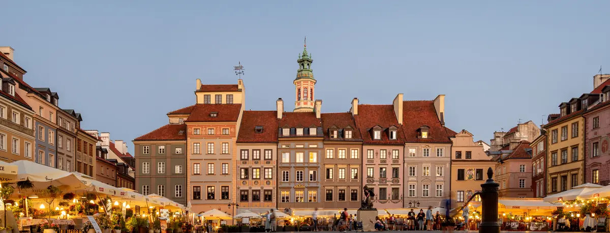

華沙
鋼鐵摩天 × 重建老城
打開城市地圖與指南 →找不到相符資料
試試城市名、店名或「火車」「地圖」等類型。
華沙 → 克拉科夫 → 樂斯拉夫 → 波茲南 → 華沙

從城市轉場到現場提醒，每一天都是一個可獨立翻閱的章節。
先讀城市氣質，再打開地圖、景點、餐廳與拍照時間。
共 16 項。先處理有日期與時段的票務，再完成交通、餐飲及備案。
四段 PKP 已選定規劃班次，一組 Auschwitz 往返巴士採現行班表參考；尚未完成指定日確認或購票前，不把時刻、車種或月台當成已確認。
指定日期的場次與庫存會變動；付款完成後請下載離線票券並核對入場時間。
不需購票，但會決定當天走不走得成；未確認前主行程只排外觀與周邊。
餐廳營業與臨時包場以店家訂位頁公告為準。
天氣不影響主行程時不必購買。
13:30 抵蕭邦機場，SKM 進城，老城散步、倒時差
| 時間 | 行程 | 花費 | 時長 |
|---|---|---|---|
| 13:30 | 抵蕭邦機場 申根入境 + 提行李 ~75min |
— | 75 min |
| 14:45 | SKM S2/S3 目標班次 第 1 區時間票 · 約 25–30 分；抵達後查 WTP 即時月台與票價 |
抵達日確認 | 25–30 min |
| 15:15 | 旅館 Check-in | — | 30 min |
| 16:45 | ★ 老城廣場 皇家城堡 · 美人魚雕像 |
免費 | 1 h |
| 18:00 | Krakowskie Przedmieście 黃昏氛圍 |
免費 | 1 h |
| 19:00 | Pierogi 晚餐 Zapiecek · Krakowskie Przedmieście 55（就在 18:00 散步那條街上）；出發前確認當日營業 |
PLN 35–55 | — |
| 21:00 | 早睡倒時差 | — | — |
抵達後啟用網路、確認住宿地址與行李狀態。
抵達後依航站現場標示前往 SKM 月台。
入口：抵達後依 Arrivals 與 SKM／Railway Station 標示前往航廈下方車站；回程依電子機票確認報到區。
開啟導航 ↗ · 官網 ↗入口：由已確認住宿方向選最近入口；進站後以大廳電子牌確認月台，不預先假定入口或月台。
開啟導航 ↗ · 官網 ↗入口：主要訪客入口在 plac Zamkowy 4；依票券時段與現場安檢標示入場。
開啟導航 ↗ · 官網 ↗入口：公共廣場，導航至 Rynek Starego Miasta；與 plac Zamkowy 的皇家城堡廣場是不同地點。
開啟導航 ↗ · 官網 ↗入口：公共街道，從城堡廣場沿皇家大道步行，無需入場。
開啟導航 ↗ · 官網 ↗訂單仍使用 Reduta 舊名；Accor 官網目前改稱 Warszawa West Station，為同一地址。
入口：抵達後由飯店主入口前往接待櫃檯，訂房代碼僅保留於私人離線資料。
開啟導航 ↗ · 官網 ↗抵達後查 WTP 即時班次、月台與官方票價，使用當日適用的第 1 區時間票。
先以已確認的住宿地址建立路線；若拖行李不直接去老城。
班次、月台或上下車點為動態資料，依已購票與當日電子牌確認。
未選定可靠分店或為彈性活動，不預填地址。
休息安排不需要導航地址。
Pierogi @ Zapiecek
Wedel 熱巧克力 @ E. Wedel Pijalnia
票價出發前依官方售票頁重查 · 室內 + 360° 城景，老城廣場走路 12 分
室內展館 + 蕭邦像，免費，傍晚前可走
現在完成，明天出門就不用在網路不穩時臨時找資料。
日落前側光打在彩色立面，廣場人少
順光；城堡紅牆在低角度陽光下最飽和（已對齊 Day1 實際行程 16:45–17:45）
EIP 5300 參考 08:45–10:56；由華沙西站上車並安排一等艙體驗

| 時間 | 行程 | 花費 | 時長 |
|---|---|---|---|
| 07:50 | 退房後步行前往 Warszawa Zachodnia ibis budget Warszawa West Station 出發；步行規劃約 15–20 分，出發前依導航重算 |
— | 15–20 min |
| 08:10 | 抵 Warszawa Zachodnia 預留找月台與一等車廂時間；月台以當日電子牌為準 |
— | 35 min 緩衝 |
| 參考 08:45 | EIP 5300 前往克拉科夫 參考班次；10/25 換表後須確認仍停靠西站並完成購票 |
票價待確認 | 2h11 |
| 參考 10:56 | 抵 Kraków Główny | — | 5–10 min 拖行李 |
| 11:10 | 旅館寄放行李 ibis budget Krakow Stare Miasto 在 Pawia 11，飯店官網標示距車站約 200 公尺 |
— | 20 min |
| 11:30 | 車站周邊午餐 10/25 為非營業週日，先確認店家當日營業；用餐後步行約 25–30 分到 Wawel |
PLN 40–60 | 45 min |
| 13:00 | ★ 瓦維爾大教堂 週日 12:30–17:00；Cathedral Museum 週日不開 |
PLN 26／18 | 45 min |
| 14:00 | ★ Wawel 城堡短路線 選擇可於 15:00 前結束的展區；完整 2 小時路線會壓縮後續步行 |
依選定展區官網票價 | 1 h |
| 15:00 | ★ 中央廣場 + 聖瑪利亞 本次先看廣場與教堂外觀，登塔改為有餘裕才安排。整點 Hejnał 號角；塔票僅於 Mariacki 廣場 7 號當日現場售票 |
外觀免費 | 30 min（含由城堡步行） |
| 15:30 | 紡織會館 Sukiennice 快速一覽 採購留到 10/27 |
免費入場 | 15 min |
| 15:45 | 步行經 Kazimierz、Podgórze 前往辛德勒工廠 保留約 85 分鐘步行與沿途短停，17:10 前到入口；時間不足改用 Jakdojade 查當下交通 |
— | 約 1 h 25 min |
| 17:30 | ★ 辛德勒工廠 週日最後入場 18:30 · mhk.pl/en 預約 |
PLN 60 · 優待 45 | 2 h |
| 19:45 | ★ Kazimierz Plac Nowy zapiekanka 晚餐 Endzior / Krzysiek |
PLN 18–25 | — |
08:45 → 10:56 · 2h11 · 票價待確認
❗瓦維爾城堡尚未訂票；辛德勒工廠個人網路票在參觀日前 90 天 09:00 開放，10/25 已可在官方售票頁查／購。瓦維爾大教堂週日 12:30–17:00；城堡改走短路線並於 15:00 前離開，保留經 Kazimierz、Podgórze 步行到辛德勒工廠的時間。辛德勒工廠週二至週日 09:00–20:00、最後入場 18:30，17:30 屬可行時段。10/25 為非營業週日，多數一般商店關閉；餐廳等法定例外是否營業仍以店家公告為準。
非營業週日；火車班次與餐廳營業當日確認。
入口：由 ibis budget Warszawa West Station 步行前往；進站後以電子牌確認 EIP 5300 的實際月台。
開啟導航 ↗ · 官網 ↗入口：依 Galeria Krakowska／車站大廳指標進站，月台以當日電子牌為準。
開啟導航 ↗ · 官網 ↗入口：登上 Wawel Hill 後依 Cathedral 指標前往大教堂入口，避開禮拜動線。
開啟導航 ↗ · 官網 ↗入口：先到 Wawel Hill 訪客服務／票券標示處，再依已購路線入口入場。
開啟導航 ↗ · 官網 ↗入口：公共廣場，從 Grodzka／Floriańska 等街道步行進入，無單一入口。
開啟導航 ↗ · 官網 ↗入口：由 plac Mariacki 5 的訪客入口依現場標示進入，禮拜入口可能分流。
開啟導航 ↗ · 官網 ↗入口：一樓公共市集由中央廣場拱廊進入；博物館入口依 MNK 現場標示。
開啟導航 ↗ · 官網 ↗入口：導航至 Lipowa 4，依 Museum of Kraków 入口與已購時段排隊。
開啟導航 ↗ · 官網 ↗入口：公共廣場，導航至中央圓亭；餐飲攤位仍須逐店確認。
開啟導航 ↗ · 官網 ↗訂單仍使用 Reduta 舊名；Accor 官網目前改稱 Warszawa West Station，為同一地址。
入口：抵達後由飯店主入口前往接待櫃檯，訂房代碼僅保留於私人離線資料。
開啟導航 ↗ · 官網 ↗位於 Kraków Główny 與 Galeria Krakowska 旁。
入口：抵達後由飯店主入口前往接待櫃檯，訂房代碼僅保留於私人離線資料。
開啟導航 ↗ · 官網 ↗目前採 EIP 5300 參考 08:45–10:56；10/25 換表後核實仍停靠西站，完成購票後只依票面車次、車廂與座位進站。
先寄放行李；15:45 由老城出發，沿 Kazimierz、Podgórze 步行，17:10 前到辛德勒工廠。若延誤則用 Jakdojade 查即時市內交通。
班次、月台或上下車點為動態資料，依已購票與當日電子牌確認。
未選定可靠分店或為彈性活動，不預填地址。
步行沿途短停保持彈性；以辛德勒工廠入口地址為終點，17:10 前到場。
Obwarzanek 圓圈麵包 (PGI)
Zapiekanka @ Plac Nowy 圓亭
Klezmer-Hois 猶太料理
最後入場其實是 18:30，比原記錄多一小時可調度；mhk.pl/en 開放預約後立即下單
廣場下方歷史展（Rynek Główny 1），PLN 45／35，最後入場為閉館前 75 分鐘。官方 2026 閉館日不含 10/25；週日時間以官網當日為準。另註：每週二免費（免費日不可預約、現場限量、每人限領 5 張），每月第二個週一休館
現在完成，明天出門就不用在網路不穩時臨時找資料。
塔樓逆光，改拍東側迴廊反射光
正午前後太陽在南方低角度，順光打在 Wawel 面河的南側城牆；從 Dębnicki 橋往東拍，帶維斯瓦河面反光（已對齊 Day2 午餐後前往大教堂途中的 10–15 分鐘繞路）
波蘭最沉重也最重要的一天
| 時間 | 行程 | 花費 | 時長 |
|---|---|---|---|
| 參考 07:10 | Lajkonik · 克拉科夫 → 奧斯威辛 Kraków MDA 地下 D10 → Muzeum Auschwitz；現行班表參考，10/26 指定日須再確認 |
待確認 | 約 1h25 |
| 參考 08:35 | 抵 Auschwitz I 預留約 85 分鐘完成寄物、安檢、領耳機與提前報到 |
— | 約 1h25 |
| 10:00 | ★ 英文官方導覽 一館 + 比克瑙 · 約 3.5 h；票價依官方訂票頁 |
依官方訂票頁 | 3.5 h |
| 13:30 | 導覽結束 | — | — |
| 參考 15:30 | Lajkonik 巴士返克拉科夫 13:45 班次緩衝過短，不採用；10/26 指定日仍須再確認 |
待確認 | 約 1h25 |
| 參考 16:55 | 抵 Kraków MDA · 休息 | — | — |
| 18:00 | 安靜晚餐沉澱情緒 | PLN 60–100 | — |
參考 07:10 → 參考 08:35 · 約 1h25 · 待業者開放 10/26 售票
❗最急一項。所有入場證只在 visit.auschwitz.org 線上提供，入口不售票；10 月入場時間為 07:30–17:00。Lajkonik 07:10 去、15:30 回是 2026-08-09 查得的現行班表參考，不是 10/26 已確認班次，付款前必須再查。
長時間導覽日，保留補水、保暖與醫療聯絡卡。
Lajkonik 現行去程由地下 D10 發車；10/26 指定日仍須依售票頁確認。
入口：待班次、分店或現場集合點確認。
開啟導航 ↗入口：務必到 Więźniów Oświęcimia 55 的訪客服務中心／入口，不使用通訊地址 20 號。
開啟導航 ↗ · 官網 ↗入口：跟隨官方導覽接駁與工作人員指示，不自行變更集合點。
開啟導航 ↗ · 官網 ↗位於 Kraków Główny 與 Galeria Krakowska 旁。
入口：抵達後由飯店主入口前往接待櫃檯，訂房代碼僅保留於私人離線資料。
開啟導航 ↗ · 官網 ↗現行班表參考 07:10 → 08:35、15:30 → 16:55；10/26 指定日與票價仍須由業者售票頁確認。
參加官方導覽時依當日工作人員指示搭接駁車，不自行跳過集合點。
班次、月台或上下車點為動態資料，依已購票與當日電子牌確認。
班次、月台或上下車點為動態資料，依已購票與當日電子牌確認。
抵達後的休息地點保持彈性，不需要固定導航地址。
未選定可靠分店或為彈性活動，不預填地址。
導覽風雨無阻，請穿防水鞋 + 帶折傘
Galicia Jewish Museum 每日 10:00–18:00、全票 35 PLN；MOCAK 週一休館，10/26 不列入備案。出發前仍須重查臨時閉館。
現在完成，明天出門就不用在網路不穩時臨時找資料。
IC 3600 參考 17:55–20:52；鹽礦後保留取行李與進站緩衝
| 時間 | 行程 | 花費 | 時長 |
|---|---|---|---|
| 08:00 | 早餐 + 退房 行李寄旅館 |
— | — |
| 09:00 | 火車到 Wieliczka Rynek-Kopalnia KMŁ；用 70 分鐘 KMK+KMŁ 聯票或依當日售票頁 |
PLN 10（70 分聯票） | 約 25 min |
| 10:00 | ★ Wieliczka 鹽礦 Tourist Route 英文團 3.5 km · 135m 深 · St. Kinga 鹽教堂 |
依 10/27 官方日期選擇器 | 2–3 h |
| 13:00 | Wieliczka 鎮中心午餐 | PLN 40–60 | 30 min |
| 13:30 | 火車回 Kraków Główny | PLN 10（70 分聯票） | 約 25 min |
| 14:30 | ★ Kazimierz 白天散步 舊猶太會堂 · Szeroka 街 · 《辛德勒名單》場景 |
免費 | 1.5 h |
| 16:00 | 結束 Kazimierz 散步，回 ibis 取行李 飯店距 Kraków Główny 約 200 公尺；採購改為有餘裕才安排 |
— | — |
| 17:20 | 抵 Kraków Główny 確認月台、車廂與座位；發車前保留約 35 分鐘 |
— | 35 min 緩衝 |
| 參考 17:55 | IC 3600 前往樂斯拉夫 指定日待確認／尚未訂票 |
票價待確認 | 2h57 |
| 參考 20:52 | 抵 Wrocław Główny 步行至主站對面的 Hotel Piast，拖行李保守抓 5–10 分鐘 |
— | — |
17:55 → 20:52 · 2h57 · 票價待確認
❗鹽礦與城際火車皆尚未訂。鹽礦英文場、實際票價與庫存須在官方日期選擇器確認；IC 3600 的 17:55–20:52 是目前採用的參考班次，不是已購票。若指定日班表不同，先保留 17:20 抵站與住宿接駁緩衝再重排。
退房後先確認行李寄放，再依實際 PKP 班次轉場。
入口：依 Galeria Krakowska／車站大廳指標進站，月台以當日電子牌為準。
開啟導航 ↗ · 官網 ↗入口：Tourist Route 從 Daniłowicz Shaft（Daniłowicza 10）集合入場。
開啟導航 ↗ · 官網 ↗入口：公共廣場，導航至中央圓亭；餐飲攤位仍須逐店確認。
開啟導航 ↗ · 官網 ↗入口：一樓公共市集由中央廣場拱廊進入；博物館入口依 MNK 現場標示。
開啟導航 ↗ · 官網 ↗入口：由主站大廳進站，當日用電子牌確認月台與任何臨時改道。
開啟導航 ↗ · 官網 ↗位於 Kraków Główny 與 Galeria Krakowska 旁。
入口：抵達後由飯店主入口前往接待櫃檯，訂房代碼僅保留於私人離線資料。
開啟導航 ↗ · 官網 ↗住宿訂單已確認；飯店官網目前未正常顯示完整地址，出發前須用訂房確認或直接向飯店核對。
入口：完整門牌尚待飯店第一方或私人訂房確認核對。
開啟導航 ↗ · 官網 ↗以當日時刻表與售票頁為準；下車後步行前往 Daniłowicza 立坑入口。
目前採 IC 3600 參考 17:55–20:52；17:20 前到站，指定日核實並購票後依票面班次行動。
班次、月台或上下車點為動態資料，依已購票與當日電子牌確認。
未選定可靠分店或為彈性活動，不預填地址。
班次、月台或上下車點為動態資料，依已購票與當日電子牌確認。
鹽礦 125m 地下餐廳 Karczma Górnicza
Sernik @ Cukiernia Michałek
Pierożki u Vincenta（Kazimierz）
10/27 城際班表尚未確定，不能先假定末班車或緩衝時間
地下約 17–18°C、防雨遮陽最佳備案
16:00 先收尾；不得壓縮取行李與 17:20 抵站緩衝
現在完成，明天出門就不用在網路不穩時臨時找資料。
午後柔和側光，適合窄巷與塗鴉（已對齊 Day4 實際行程 14:30–16:00）
Baltic Express 260 參考 19:10–20:29；完整保留白天遊玩時間
| 時間 | 行程 | 花費 | 時長 |
|---|---|---|---|
| 09:00 | ★ 中央廣場 + 紡織會館 dwarfsmap.com 找小矮人 |
免費 | 1.5 h |
| 10:30 | 糖果屋雙屋 + 教堂塔樓 聖伊莉莎白教堂塔高 96m、觀景台 75m、304 階無電梯；一–六 10:00–19:00 |
PLN 16／10 · 現金 | 45 min |
| 11:30 | ★ 拉茨瓦維採全景畫 30 分鐘導覽 |
PLN 50 | 1 h |
| 13:30 | ★ 百年廳 (UNESCO) 先以官方 availability calendar 確認 10/28 是否可參觀內部；未確認前以外觀、噴泉與日本花園規劃 |
外觀免費 | 1 h |
| 16:15 | ★ 座堂島煤氣燈 日落約 16:34；點燈人無固定公開出發分鐘，在島上等候與散步 |
免費 | 1 h |
| 17:15 | 座堂島結束後回 Piast 取行李 座堂島 → 旅館約 25–30 分；距參考發車 1h55，18:35 前抵站後保留約 35 分鐘緩衝 |
— | 約 1 h 20 min |
| 18:35 前 | 抵 Wrocław Główny 確認月台、車廂與座位 |
— | 至少 35 min 緩衝 |
| 參考 19:10 | Baltic Express 260 前往波茲南 指定日待確認／尚未訂票 |
票價待確認 | 1h19 |
| 參考 20:29 | 抵 Poznań Główny 先到 Towarowa 37/201 接待處取鑰匙；實際公寓門牌依訂房確認 |
— | — |
19:10 → 20:29 · 1h19 · 票價待確認
❗此日兩項皆尚未訂票。百年廳的 10/28 內部參觀狀態須以官方 availability calendar 確認，未確認前不販售或保證室內行程。10/28 日落約 16:34；點燈人沒有對外保證的固定出發分鐘，因此安排 16:15–17:15 在座堂島等候，不再把 16:45 寫成確定時刻。
高強度轉場日；晚間先充電並下載隔日資料。
入口：由主站大廳進站，當日用電子牌確認月台與任何臨時改道。
開啟導航 ↗ · 官網 ↗入口：由 Purkyniego 11 主入口依已購時段入場。
開啟導航 ↗ · 官網 ↗入口：本日只看外觀與周邊；如臨時改入室內，使用 Wystawowa 1 訪客中心入口。
開啟導航 ↗ · 官網 ↗入口：公共廣場，導航至 Rynek；無單一入口。
開啟導航 ↗ · 官網 ↗入口：由 plac Katedralny 18 正門進入；禮拜期間尊重現場分流。
開啟導航 ↗ · 官網 ↗入口：由車站大廳依電子牌前往月台；商場與車站入口不要混淆。
開啟導航 ↗ · 官網 ↗住宿訂單已確認；飯店官網目前未正常顯示完整地址，出發前須用訂房確認或直接向飯店核對。
入口：完整門牌尚待飯店第一方或私人訂房確認核對。
開啟導航 ↗ · 官網 ↗此處為官方接待與取鑰匙地址；實際公寓門牌以私人訂房確認為準。
入口：先到 Towarowa 37/201 接待處取鑰匙；實際公寓門牌依私人訂房確認。
開啟導航 ↗ · 官網 ↗百年廳跨區移動當日用 Jakdojade 選取實際電車；預留從座堂島回車站取行李的時間。
目前採 Baltic Express 260 參考 19:10–20:29；18:35 前到站，指定日核實並購票後依票面班次行動。
教堂塔樓入口與開放狀態須依當日官方公告確認。
Piast 住宿已確認，但完整門牌尚待飯店第一方或私人訂房確認核對。
班次、月台或上下車點為動態資料，依已購票與當日電子牌確認。
Śląskie kluski @ Konspira
Browar Stu Mostów 精釀
開放時間、票價與能見度以官方當日公告為準，不用舊票價規劃
若日落後遇雨遮蔽煤氣燈，回廣場喝熱酒（PLN 12）
若 official availability calendar 顯示內部不可參觀，省下的時間可補足點燈前空檔
現在完成，明天出門就不用在網路不穩時臨時找資料。
上午光從東南方來，順光打在市政廳著名的東側哥德山牆；廣場東側那排彩色屋為西向、上午逆光，改拍西側與北側立面（已對齊 Day5 實際行程 09:00–10:30）
10/28 日落約 16:34；點燈人沒有對外保證的固定出發分鐘，日落前後在島上等候，暗處需高感光度（已對齊 Day5 實際行程 16:15–17:15）
EIC 8104 參考 17:40–約 20:00；兼顧正午山羊秀與下午行程
| 時間 | 行程 | 花費 | 時長 |
|---|---|---|---|
| 09:00 | ★ 教堂島 Ostrów Tumski 梅什科一世受洗地 |
未收費 | 1.5 h |
| 11:00 | 廣場卡正面位置 | — | 45 min · 提早卡位 |
| 12:00 | ★ 山羊鐘樓秀 官方固定正午登場，兩隻金屬山羊互頂 12 次 |
免費 | 5 min |
| 12:15 | ★ 聖馬丁牛角麵包 (PGI) Cukiernia Kandulski；出發前確認分店、當日營業與 PGI 證書 |
依門市標價 | 15 min |
| 13:30–15:00 預留 | ★ 牛角麵包博物館 10/29 週四英語場尚未確認；依官網可售場次調整，不能直接視為 13:30 開演 |
依官方售票頁 | 表演約 1 h |
| 15:00 | Stary Browar 博物館若延後則縮短購物；沒有合適英語場時改逛帝王城堡 |
購物另計 | 1 h |
| 16:00 | 取行李、前往 Poznań Główny 先確認公寓行李寄放地點；17:05 前抵站 |
— | 約 1 h |
| 17:05 | 抵 Poznań Główny 確認月台、車廂與座位；拖行李保留進站緩衝 |
— | 35 min 緩衝 |
| 參考 17:40 | EIC 8104 前往華沙 指定日待確認／尚未訂票 |
票價待確認 | 約 2h20 |
| 參考約 20:00 | 抵 Warszawa Centralna 步行至 Hotel Metropol 約 500 公尺，拖行李預留 10–15 分鐘 |
— | — |
17:40 → 約 20:00 · 約 2h20 · 票價待確認
城際火車與華沙住宿均以離線地址備援。
入口：由車站大廳依電子牌前往月台；商場與車站入口不要混淆。
開啟導航 ↗ · 官網 ↗入口：由 Ostrów Tumski 17 正門進入；禮拜期間以現場開放區域為準。
開啟導航 ↗ · 官網 ↗博物館整修閉館，此地點用於 12:00 山羊鐘樓秀外觀。
入口：本次只在 Stary Rynek 1 外觀區看 12:00 山羊鐘樓秀，博物館整修閉館。
開啟導航 ↗ · 官網 ↗官方標示實際入口在 Klasztorna 23；10/29 英語場仍須從售票頁確認。
入口：地址為 Stary Rynek 41/2，實際入口在 Klasztorna 23；請於場次開始前 10 分鐘報到。
開啟導航 ↗ · 官網 ↗入口：由 Święty Marcin 80/82 依 CK Zamek 訪客標示進入。
開啟導航 ↗ · 官網 ↗入口：由 Półwiejska 42 商場入口進入；與帝王城堡是兩個不同站點。
開啟導航 ↗ · 官網 ↗入口：由已確認住宿方向選最近入口；進站後以大廳電子牌確認月台，不預先假定入口或月台。
開啟導航 ↗ · 官網 ↗此處為官方接待與取鑰匙地址；實際公寓門牌以私人訂房確認為準。
入口：先到 Towarowa 37/201 接待處取鑰匙；實際公寓門牌依私人訂房確認。
開啟導航 ↗ · 官網 ↗位於 Metro Centrum 附近，步行可達 Warszawa Centralna。
入口：抵達後由飯店主入口前往接待櫃檯，訂房代碼僅保留於私人離線資料。
開啟導航 ↗ · 官網 ↗11:45 前到市政廳正面；博物館英語場依售票頁調整，16:00 開始取行李與前往車站。
目前採 EIC 8104 參考 17:40–約 20:00；17:05 前到站，指定日核實並購票後依票面班次行動。
公寓寄放與取行李地點須先向住宿確認，再前往車站。
尚未選定可靠分店，待分店與營業時間確認後補入。
班次、月台或上下車點為動態資料，依已購票與當日電子牌確認。
Rogal Świętomarciński (PGI) ⭐
Pyry z gzikiem @ Pyra Bar
週四英語場、價格與庫存都須依 10/29 官方售票系統確認；未確認前改以 Stary Browar 或帝王城堡為室內備案
兩處各有室內空間，但館際移動需走戶外；下雨仍需雨具並預留交通時間
現在完成，明天出門就不用在網路不穩時臨時找資料。
接近正午的高角度光打亮市政廳東向立面與彩色商人屋；卡位同時等 12:00 山羊報時（已對齊 Day6 實際行程 11:00–12:15）
上午光從東側來，座堂西面雙塔為逆光；改從 Śródka 側或橋上取側光與河面倒影（已對齊 Day6 實際行程 09:00–10:30）
依閉館時間重排：最早先看皇家城堡
| 時間 | 行程 | 花費 | 時長 |
|---|---|---|---|
| 10:00 | ★ 皇家城堡 採 Royal Route，官方標示約 60 分；二–日 10:00–18:00、末入 17:00 |
票價出發前依官方售票頁重查 | 約 60 min |
| 11:15 | 午餐（老城 → POLIN 路上） 選當日有營業且可訂位的店 |
依餐廳 | 45 min |
| 12:00 | 前往 POLIN + 安檢緩衝 依當日交通重算，保留入館安檢與提早報到時間 |
— | 1 h 15 min |
| 13:15 | ★ POLIN 猶太博物館 週五 10:00–18:00；主展最晚 16:00 入場 |
依官方售票頁 | 2 h |
| 15:15 | 前往華沙起義博物館 + 安檢緩衝 依當日交通重算，16:00 僅為規劃目標，以實際可售時段為準 |
— | 45 min |
| 16:00 | ★ 華沙起義博物館 35／30 PLN；以官方票頁 10/30 可售時段為準 |
PLN 35／30 | 2 h |
| 19:30 | 老城最後晚餐 U Fukiera / Polka |
PLN 120–200 | 1.5 h |
| 21:00 | 老城廣場夜燈漫步 自由收尾 |
— | — |
❗四項皆尚未訂。皇家城堡已由官方確認二–日 10:00–18:00、最後入場 17:00；本行程採約 60 分鐘 Royal Route，避免與午餐及館際移動重疊。POLIN 週五 10:00–18:00，主展最後入場為閉館前 2 小時。起義博物館票價 35／30，個人免費日為週一（非週四，官方公告）；10/30 是週五，照常收費，實際可售時段仍以官方票頁為準。蕭邦博物館 2026 整修資訊則須在出發前再核對官方公告。
諸聖節前夕，逐店確認晚餐與交通；離線備妥 SOS 卡。
入口：主要訪客入口在 plac Zamkowy 4；依票券時段與現場安檢標示入場。
開啟導航 ↗ · 官網 ↗入口：公共廣場，導航至 Rynek Starego Miasta；與 plac Zamkowy 的皇家城堡廣場是不同地點。
開啟導航 ↗ · 官網 ↗入口：由 Mordechaja Anielewicza 6 主入口依票券與安檢標示進入。
開啟導航 ↗ · 官網 ↗入口：由 Grzybowska 79 訪客入口依已購時段進場。
開啟導航 ↗ · 官網 ↗位於 Metro Centrum 附近，步行可達 Warszawa Centralna。
入口：抵達後由飯店主入口前往接待櫃檯，訂房代碼僅保留於私人離線資料。
開啟導航 ↗ · 官網 ↗購票後以票面入場時段倒推離館時間；館際移動當日用 Jakdojade 重算。
晚餐地址待訂位／分店確定後填入；不以備選店名臆測導航。
未選定可靠分店或為彈性活動，不預填地址。
未選定可靠分店或為彈性活動，不預填地址。
Żurek 酸黑麥湯 @ U Fukiera
Pączki @ A. Blikle 1869
兩館內容都沉重；不要犧牲已確認的皇家城堡上午時段
票價出發前依官方售票頁重查 · 45 min · 直通老城地鐵，雨天備案
現在完成，明天出門就不用在網路不穩時臨時找資料。
10/30 華沙日落約 16:11，這個時段已是全黑純夜景，不是藍調時刻；想拍藍調得在 16:10–16:45，但 Day 7 那段時間排在起義博物館內。售票資訊至 20:00，晚間時段以當日公告為準（已對齊 Day7 起義博物館後、晚餐前的彈性時段）
從容收尾 · SKM 機場線 20 分鐘
| 時間 | 行程 | 花費 | 時長 |
|---|---|---|---|
| 08:00 | 早餐 + 老城散步 | PLN 40 | 1.5 h |
| 09:45 | 退房 → Warszawa Centralna 由 Hotel Metropol 出發；依行李狀況步行或叫車，當日再用導航重算並預留找月台緩衝 |
— | 30–45 min |
| 10:30 | SKM S2/S3 目標班次 第 1 區時間票；當日查 WTP 月台、發車時間與票價 |
當日確認 | 約 25–30 min |
| 11:00 | 抵 Chopin 第一航廈 | — | — |
| 11:15 | 退稅文件 + 報到 + 安檢 如有 TAX FREE 商品，依機場與電子文件指示辦理；託運商品須在交運前備妥供海關查驗 |
— | 預留至少 60–90 min |
| 14:40 | ★ QR 260 起飛 WAW → DOH → HKG → TPE |
— | — |
離開 EU 前處理退稅；託運商品若需查驗，先完成海關程序。
位於 Metro Centrum 附近，步行可達 Warszawa Centralna。
入口：抵達後由飯店主入口前往接待櫃檯，訂房代碼僅保留於私人離線資料。
開啟導航 ↗ · 官網 ↗入口：公共廣場，導航至 Rynek Starego Miasta；與 plac Zamkowy 的皇家城堡廣場是不同地點。
開啟導航 ↗ · 官網 ↗入口：由已確認住宿方向選最近入口；進站後以大廳電子牌確認月台，不預先假定入口或月台。
開啟導航 ↗ · 官網 ↗入口：抵達後依 Arrivals 與 SKM／Railway Station 標示前往航廈下方車站；回程依電子機票確認報到區。
開啟導航 ↗ · 官網 ↗僅供緊急狀況備援，不列為一般行程站點。
入口：僅作緊急聯絡備援；一般領務先於辦公時間電話確認。
開啟導航 ↗ · 官網 ↗當日查 WTP 即時發車、月台與改道；如要退稅或託運商品查驗，比一般報到更早抵達。
依電子機票與報到櫃檯確認行李直掛終點與轉機程序；每段登機牌離線保存。
班次、月台或上下車點為動態資料，依已購票與當日電子牌確認。
退稅 + 安檢順可能 12:30 就過關，1F 貴賓區外有平價咖啡
1F 出境前最後一站，伴手禮價差 +10–15% 但方便
現在完成，明天出門就不用在網路不穩時臨時找資料。
鋼鐵摩天 × 重建老城
這趟重點皇家城堡官方確認二–日 10:00–18:00、最後入場 17:00；Day 7 已由原本錯誤的 17:00 改成 10:00 第一站。
維斯瓦河（Wisła）中游西岸，波蘭地理與交通的十字路口。左岸（西）是重建的老城與現代市中心，右岸 Praga 區因 1944 年已被蘇軍佔領而躲過摧毀，保留了戰前原始街景——今日的藝術替代區。
二戰中被系統性夷平的城市：1944 華沙起義失敗後，希特勒下令逐街爆破，市區約 85% 化為瓦礫。戰後波蘭人依 18 世紀宮廷畫家 Bellotto（Canaletto）的城市風景畫逐磚重建老城，1980 年以「非典型完整重建案例」列入 UNESCO——你走的老城廣場每一面牆都不到 80 歲，卻承載 700 年的記憶。
華沙市徽是持劍舉盾的美人魚 Syrenka。傳說她與哥本哈根小美人魚是姊妹，一路游進維斯瓦河，被漁民所救後誓言守護此城——所以華沙美人魚是戰鬥形態，哥本哈根那隻是憂鬱形態。
蕭邦客死巴黎，遺體葬於拉雪茲神父公墓，但遵其遺願，姊姊將他的心臟帶回華沙，封存在聖十字教堂（Krakowskie Przedmieście 上，Day 1 傍晚散步會經過）的柱子裡。二戰期間曾被納粹取走，戰後歸位。
科學文化宮是 1955 年史達林「贈送」的蘇聯式摩天樓，華沙人曾說最棒的觀景點就是它的 30 樓——因為那是全城唯一看不到它的地方。如今旁邊蓋起純白的 MSN 現代美術館（2024 開幕、NYT 2026 必訪 No.2），新舊對峙本身就是展品。
瑪麗亞·斯克沃多夫斯卡（Maria Skłodowska-Curie）1867 年生於新城區 Freta 街 16 號，是史上唯一在兩個不同科學領域拿諾貝爾獎的人。老城散步腳程內就有她的出生地博物館。
拖曳、縮放並點選圖釘查看說明；手機上下滑動會優先捲動頁面，圖釘連結可直接開啟 Google Maps。
地圖需要網路連線才能載入。離線或載入失敗時，請改用下方景點清單中的 Google Maps 連結。
地圖底圖 © OpenStreetMap contributors
| 景點 | 類型 | 票價／備註 |
|---|---|---|
| MSN 當代美術館 | 美術館 | Plac Defilad · 展覽 40／30 · 18:00 後 25／15 · Gallery A 免費 · 週一休 |
| Neon 霓虹博物館 | 遷址 | PLN 25 / 優待 18 · 已遷入科學文化宮 4 樓（Marszałkowska 入口），可與觀景台一起看 |
| Kolejkowo Warszawa | 2025 新開 | 微縮模型館 · 2025-04 開幕 · 適合親子 |
| 海報博物館 Wilanów | 2026 重啟 | 2026-03 全新形式 · 常設「Polish Posters. Collection」 |
| 波蘭歷史博物館 · Cytadela | 2023 新館 | 新總部 2023 開館；常設展仍在建置，先查當期臨展與入場資訊 |
| E.Wedel 巧克力工廠博物館 | 2024 開館 | 每日 10:00–20:00 · 最後一團 18:15 · 導覽約 90 分 · 票價依官方場次 |
| 皇家城堡 | UNESCO 舊城核心 | 二–日 10:00–18:00，最後入場 17:00 · Castle Route 95／75（含語音導覽，約 150 分）· Royal Route 60／45（約 60 分）· 週三免費但限定路線、現場領票且數量有限 |
| 華沙起義博物館 | 歷史 | PLN 35／30 · 個人免費日為週一（官方公告，非週四）· 語音導覽 13／自備手機 10 · 可售時段以官方票頁為準 |
| POLIN 猶太史博物館 | 歷史 | 週二休；週五 10:00–18:00，主展最後入場 16:00 · 票價與庫存看官方售票頁 |
| 科學文化宮觀景台 | 地標 | 票價出發前依官方售票頁重查（2026-08-11 曾查得 30／25 PLN）· 售票資訊每日 10:00–20:00；季節性夜間開放不套用到 10 月 |
| Łazienki 公園 · Wilanów 宮 | 皇家之路 | 公園免費 · 宮殿另購票 |
| 蕭邦博物館 | 閉館 | 2026 整年閉館（整修） |
| 店家 | 等級 | 重點招牌 |
|---|---|---|
| Alon Omakase | ★ · 2026 新 | 2026 新一星 · 招牌：Edomae 握壽司 omakase，以頂級松露搭配見長 · 位少需早訂 |
| NUTA | ★ | 招牌：主廚 Andrea Camastra 創意套餐，義式底蘊融合亞洲香料，劇場式上菜 · 提前 3–5 週 |
| hub.praga | ★ | 招牌：Skrei 鱈魚配蘿蔔、海鮮冷盤、牛小排+螯蝦「海陸雙拼」 · Praga 區一星 · Day 7 順路升級 |
| Rozbrat 20 | ★ | 招牌：多層次現代歐陸套餐（逾百種食材組合出的一致風味）· 提前 3–5 週 · 需信用卡 +12.5% 服務費 |
| WANDAL | Bib · 2026 新 | 米其林 2026「年度開幕」· 招牌：顛覆式當代波蘭菜 |
| AHAAN | Bib 新 | 招牌：泰式咖哩＋道地街頭辣度 · 泰國菜 |
| Ceviche Bar | Bib | 招牌：秘魯風 ceviche 生醃海鮮 · 南美料理 |
| Koneser Grill | Bib | 招牌：炭火牛排與燒烤 · Praga 區排隊牛排館 |
| kontakt | Bib | 招牌：地中海風味時蔬與海鮮小盤 |
| Le Braci | Bib | 招牌：義式手工麵食＋炭烤 · 義式小酒館 |
| Wyraj | Bib | 招牌：時令波蘭傳統家常菜重製 |
| Blisko Bar | Bib 新 | 招牌：自然酒配精緻小酒館菜 |
| Kieliszki na Próżnej | Bib | 招牌：酒杯小酌配歐陸小盤 · 酒吧型小酒館 |
| WIN wine bar & shop | Bib 新 | 招牌：季節小盤配自然酒 · 酒鋪型餐酒館 |
| Zagoździński | 甜點 | 招牌：pączki 玫瑰餡甜甜圈 · 1925 至今排隊名店（Górczewska） |
| Gościniec（探索候選） | 餃子 | 招牌：手工 pierogi 餃子（肉餡／馬鈴薯起司／藍莓）· 指定分店、營業時間與訂位狀態須在出發前查證 |
| Bar Mleczny Rusałka | 牛奶吧 | 招牌：傳統家常套餐（湯＋主菜） · Praga · 一餐 25 PLN 內 |
| Sapko Kebab | 街食 | 招牌：土耳其 kebab，肉香四溢、份量足，在地口碑名店 |
| OKIENKO | 街食 | 招牌：比利時薯條配多款自製沾醬 · 窗口式外帶 |
| Coś Na Ząbkowskiej | 在地 | Praga 藝術區（Ząbkowska 9）· 招牌：波蘭家常菜現代詮釋 |
| Hala Koszyki | 美食廣場 | 免訂位 · 多攤集合，可一次吃到多國小吃 |
百年美食市集
現場前往
老城多家分店
現場前往
1851 年創立的華沙巧克力老牌，招牌是濃稠熱巧克力
可能排隊
Żurek 麵包碗；兩家皆非米其林必比登名單，屬觀光區老牌波蘭餐廳
建議預約
套餐 PLN 25–35
現場前往
1869 年老字號
可能排隊
維斯瓦河畔沙灘酒吧，日落後氣氛佳
現場前往 Google Maps →
POLIN 附近，可接續博物館主題
現場前往 Google Maps →
老城周邊，適合最後一晚小酌
現場前往
手工巧克力與糖果，適合最後採買
現場前往
必比登 · 顛覆式波蘭菜，Day 7 晚餐候選
建議預約 Google Maps →
酒杯牆名店 · 波蘭菜配酒，WANDAL 訂不到的首替
建議預約 Google Maps →
小館精緻路線，座位少
建議預約 Google Maps →
斯拉夫傳統食材當代化
建議預約 Google Maps →
老派滿漢波蘭菜 · 韃靼牛肉名店，離市中心稍遠
建議預約 Google Maps →
啤酒館巨無霸豬腳 · 老城旁 · 氣氛熱鬧
可能排隊 Google Maps →
Nowy Świat 上 · Bar Prasowy 排隊時的替代
現場前往 Google Maps →
玻璃罐裝 pyzy 馬鈴薯糰 · Day 7 Praga 行程順路
可能排隊 Google Maps →
新派法波混血甜點房，多分店
現場前往 Google Maps →
波蘭可麗餅 naleśniki 專門店 · 平價大份
可能排隊 Google Maps →
日落前側光打在彩色立面，廣場人少
順光；城堡紅牆在低角度陽光下最飽和（已對齊 Day1 實際行程 16:45–17:45）
10/30 華沙日落約 16:11，這個時段已是全黑純夜景，不是藍調時刻；想拍藍調得在 16:10–16:45，但 Day 7 那段時間排在起義博物館內。售票資訊至 20:00，晚間時段以當日公告為準（已對齊 Day7 起義博物館後、晚餐前的彈性時段）
中世紀石板路 × 千年王城
這趟重點辛德勒工廠週二至週日 09:00–20:00，最後入場為閉館前 90 分鐘；Day 2 的週日 17:30 時段可行，但仍須先取得官方時段票。
維斯瓦河上游，Wawel 城堡建在河畔一座石灰岩丘上——控制河運的天然要塞，也是波蘭王權 500 年的地理支點。老城以歐洲最大中世紀廣場 Rynek Główny（200m × 200m）為核心，街廓在 1241 年蒙古入侵劫掠後、依 1257 年建城特許狀重劃，至今未變。
1038–1596 年的波蘭王都，歷代國王在 Wawel 加冕與安葬。二戰時因作為納粹總督府所在地而未被戰火摧毀，是波蘭極少數「原裝」的古城——你在克拉科夫摸到的石頭大多是真的中世紀石頭。Kazimierz 原是 1335 年卡齊米日大帝敕建的獨立城市，數百年來是歐洲猶太文化重鎮，戰前 6.5 萬猶太居民戰後僅存數千。
傳說 Wawel 山丘下的洞穴住著噴火龍，吃遍牲口少女。屠龍的不是騎士，而是鞋匠學徒 Skuba——他把硫磺塞進羊皮縫成假羊，龍吞下後渴到狂飲維斯瓦河水，最後爆掉。今日城堡下河畔有一座每隔幾分鐘真的噴火的龍雕像。
聖瑪利亞教堂塔頂每小時整點吹奏 Hejnał 號角，旋律永遠在同一個音戛然而止——紀念 1241 年蒙古來襲時，吹號示警的哨兵喉嚨中箭、樂聲中斷的傳說。這是全世界少數「以未完成為完成」的城市儀式，Day 2 16:00 廣場行程剛好對到整點。
Rynek 地面下 4 公尺是 13 世紀的街面。2005–2010 年考古挖掘後原地做成 Rynek Underground 博物館（Day 2 雨備）——你腳下踩的其實是中世紀商路的天花板。
2026 米其林把全波蘭唯一二星留給了這裡的 Bottiglieria 1881（連四年），發布典禮也選在克拉科夫 ICE 會議中心舉行——波蘭美食之都的地位官方蓋章。
拖曳、縮放並點選圖釘查看說明；手機上下滑動會優先捲動頁面，圖釘連結可直接開啟 Google Maps。
地圖需要網路連線才能載入。離線或載入失敗時，請改用下方景點清單中的 Google Maps 連結。
地圖底圖 © OpenStreetMap contributors
| 景點 | 類型 | 票價／備註 |
|---|---|---|
| Wawel 皇家城堡群 | 逐展售票 | 二–日 09:00–17:00 · 城堡一、二樓完整路線 95／71，最後入場 15:00 · 王冠寶庫 47／35 |
| 中央市集廣場 · 紡織會館 | 地標 | 大型中世紀廣場（Rynek Główny）· 廣場免費 |
| Kazimierz 猶太區 | 街區 | 猶太會堂、餐酒館、街食聚集 |
| 辛德勒工廠博物館 | 需訂 | PLN 60／45 · ul. Lipowa 4 · 週一 10:00–15:00、週二–日 09:00–20:00、每月第一個週二休 · 最後入場為閉館前 90 分鐘 |
| 維利奇卡鹽礦 | 需票 | UNESCO · Kinga 鹽教堂 · 恆溫 17–18°C · 10/27 英語團、價格與庫存看官方日期選擇器 |
| 奧斯威辛-比克瑙 | 只限線上取得入場證 | 10 月 07:30–17:00 · 入口不售票 · 英文導覽指定場次與票價看官方預約系統 |
| 店家 | 等級 | 重點招牌 |
|---|---|---|
| Bottiglieria 1881 | ★★ | 全波蘭唯一二星(Kazimierz) · 招牌：波蘭×北歐兩套 tasting · 逾 500 款酒 |
| Folga | Bib | 招牌：當代創意料理小盤 · 高CP |
| MOLÁM | Bib | 招牌：泰式烤全雞配糯米飯、khao soi 咖哩麵 · 道地泰式風味 |
| NOAH | Bib | 招牌：以色列烤羊肉串配 pitta 餅 · 平價實惠 |
| Bufet KRK | Bib · 2026 新 | 二星 Bottiglieria 1881 的平價副牌 · 招牌：自製黑血腸（kaszanka）與炭烤精選肉品 · 訂不到二星的最佳替代 |
| Nat Bistro | Bib · 2026 新 | 招牌：牛肉塔塔、鴨胸配時令蔬果 · 自然酒 |
| obwarzanek 麻花圈 | 街食 | PGI · 僅克拉科夫產 · 約 3 PLN · 藍色街車（Rynek 周邊、Tunel） |
| zapiekanka | 街食 | Plac Nowy 圓亭攤（Kazimierz）· 夜宵經典（招牌 Endzior） |
| Mirror Bistro | 餃子 | 招牌：手工 pierogi 十種內餡任選＋白羅宋湯 · Kazimierz 高人氣早午餐 |
| Pierogi Szwedzkie Svensson | 餃子 | Długa 58 · 招牌：大顆創意餡料餃子 |
| Bar Smak | 在地候選 | 舊城（每天大排長龍）· 招牌：手工 pierogi＋馬鈴薯煎餅，份量大、道地家常味 |
| Hamsa | 在地候選 | Kazimierz（Szeroka 2）· 招牌：中東鷹嘴豆泥 hummus、falafel |
| Bar Mleczny 牛奶吧 | 牛奶吧 | 舊城／Kazimierz 多家 · 招牌：家常湯品與馬鈴薯煎餅 · 一餐 25 PLN 內 |
Kazimierz 與廣場
建議預約
燭光氛圍
建議預約
Plac Szczepański
可能排隊
Kazimierz
現場前往
老城手工餃子
現場前往
Endzior / Krzysiek
可能排隊 Google Maps →
2026 連續第四年二星 · 全波蘭唯一 · 需提前 2 週+ 訂位
建議預約 Google Maps →
百年甜點老店
現場前往
Bottiglieria 1881 平價副牌，免長預約
可能排隊 Google Maps →
年度青年主廚獎 Ida Malec · 自然酒
建議預約 Google Maps →
Kazimierz 以色列菜 · Hamsa 滿座時的替代
建議預約 Google Maps →
泰菜 · 連日波蘭菜吃膩時的出口
建議預約 Google Maps →
波蘭菜輕盈版 · 價格友善
建議預約 Google Maps →
塔特拉山區高地菜 · 烤 oscypek 與烤肉 · 現場民俗樂
建議預約 Google Maps →
「蜂蜜覆盆子」· 廣場旁氣氛店，觀光但穩定
建議預約 Google Maps →
城堡腳下啤酒館 · 巨份炸豬排，快食快走
可能排隊 Google Maps →
Kazimierz 在地家常 · 波蘭媽媽味 · 平價
現場前往 Google Maps →
現包現煮小店 · Pierogarnia Krakowiacy 排隊時替代
現場前往 Google Maps →
老城巷內百年氛圍 · szarlotka 蘋果派
可能排隊 Google Maps →
克拉科夫現象級冰淇淋 · 每日限定口味
可能排隊 Google Maps →
塔樓逆光，改拍東側迴廊反射光
正午前後太陽在南方低角度，順光打在 Wawel 面河的南側城牆；從 Dębnicki 橋往東拍，帶維斯瓦河面反光（已對齊 Day2 午餐後前往大教堂途中的 10–15 分鐘繞路）
午後柔和側光，適合窄巷與塗鴉（已對齊 Day4 實際行程 14:30–16:00）
千尊小矮人 × 煤氣燈點燈
這趟重點百年廳 10/28 的內部參觀狀態需以官方 availability calendar 確認；未確認前主行程只排外觀與周邊。
奧得河（Odra）在此裂成多條支流，把城市切成 12 座島、以 100 多座橋相連——「波蘭威尼斯」。最老的核心 Ostrów Tumski（座堂島）是千年前的起點，至今保留全歐少數仍由點燈人每晚手工點燃的瓦斯街燈。
這座城市 1945 年前叫 Breslau，是德國第六大城。戰後國界西移，德裔居民被遷出，取而代之的是被蘇聯劃走的東部城市利沃夫（Lwów）的波蘭移民——整座城市的人口被「換血」。拉茨瓦維採全景畫正是從利沃夫一起搬來的鎮城之寶，Karczma Lwowska 餐廳的名字也是這段記憶。
城裡有逾 1,000 尊銅製小矮人（krasnale），但數量持續增加、無法精確統計。1980 年代反共團體「橙色替代」（Pomarańczowa Alternatywa）以塗鴉小矮人與荒誕街頭劇嘲諷政權——警察逮捕一個扮小矮人的人有多可笑，體制就有多可笑。2005 年起城市以銅像致敬這段歷史，每一尊都有名字與職業。
日落時分，披斗篷、持長桿的點燈人會逐一點亮 Ostrów Tumski 的瓦斯燈。10/28 日落約 16:34；點燈人沒有對外保證的固定出發分鐘，Day 5 以 16:15–17:15 在座堂島等候與散步規劃。
百年廳（Hala Stulecia，1913）落成時擁有世界最大跨距的鋼筋混凝土圓頂，直接影響了現代主義建築的走向，2006 年列入 UNESCO——在古蹟之城看一座「未來古蹟」。
拖曳、縮放並點選圖釘查看說明；手機上下滑動會優先捲動頁面，圖釘連結可直接開啟 Google Maps。
地圖需要網路連線才能載入。離線或載入失敗時，請改用下方景點清單中的 Google Maps 連結。
地圖底圖 © OpenStreetMap contributors
| 景點 | 類型 | 票價／備註 |
|---|---|---|
| 小矮人 Krasnale 尋寶 | 免費 | 全城散布大量小銅像 · Rynek／Plac Solny／Świdnicka 一帶較集中 |
| 中央市集廣場 · 市政廳塔 | 地標 | 彩色山牆屋 · 觀景塔 |
| 大教堂島 Ostrów Tumski | 古城 | 全城最古老城區 |
| Afrykarium · 動物園 | 熱門 | PLN 60 / 優待 50 · 非洲主題水族館 · 線上購票 |
| Panorama Racławicka | 全景畫 | 4/1–10/31 每日 08:30–19:00 · PLN 50／35 · 每場 30 分，門票指定日期與場次 · 官方 2026 閉館日含 10/31 與 11/1（10/28 不在其列）· 票根 3 個月內可免費進國立博物館等三館 |
| 百年廳 Hala Stulecia | UNESCO | Visitor Centre 四–十月二–日 10:00–18:00，25／20 · 含廳內 30／25，廳內依活動日曆開放 |
| Hydropolis 水知識中心 | 室內 | 2026-08-11 官網查證：平日 45／36、週末／假日 47／38 PLN；入場與名額以指定日期售票頁為準 |
| Kolejkowo 微縮館 | 室內 | 2026-08-12 官網查證：一般票線上 39 PLN 起、現場 55 PLN 起；優待票線上 33 PLN 起、現場 45 PLN 起 · Sky Tower 1 樓 · 每日 10:00 起，關門時間查指定日期 |
| 店家 | 等級 | 重點招牌 |
|---|---|---|
| BABA | ★ · 2026 新 | 2025 Bib 升 2026 一星 · 主廚 Beata Śniechowska · 招牌：「Petit Bonbon」創意餃子、招牌肉卷（meatloaf） |
| Most | ★ · 2026 新 | 2026 新一星 · 招牌：南瓜餡餃子配松露、鱈魚配醃紫洋蔥菇菌醬 |
| IDA kuchnia i wino | Bib | 招牌：現代版 kopytka 馬鈴薯疙瘩、pierogi、żurek 酸湯 · 149 PLN 含酒套餐，高CP |
| Tarasowa | Bib | 招牌：Złotnicka 豬肉、Zielenica 鱒魚卵 · 百年廳畔露台景觀 |
| Pijalni | Bib 新 | 招牌：柴火慢烤季節料理 · 重味道、不花俏、自然酒選擇多 |
| Restauracja Wrocławska | 在地 | 戰前風味 · 招牌：bigos 獵人燉菜、Silesian 餃 |
| Piwnica Świdnicka | 歷史 | 市政廳地窖 · 歐洲最古老餐廳之一（1273）· 招牌：傳統燉肉與啤酒 |
| Miś SC | 牛奶吧 | 樂斯拉夫最有名的牛奶吧，招牌：pierogi、家常湯品，價格實惠、天天排隊 |
| Bar Witek | 街食 | 招牌：zapiekanka 烤餅 · 樂斯拉夫在地地標，門口有專屬小矮人雕像 |
| Ze Smakiem Pierogarnia | 餃子 | 舊城西側 · 招牌：手工 pierogi，在地公認最道地之一 |
| jagodzianka 藍莓包 | 甜點 | 在地麵包店 · 招牌：夏季限定藍莓酵母麵包 |
80 年代反共主題
現場前往
廣場旁
現場前往 Google Maps →
波蘭/烏克蘭
現場前往
PLN 20–30
現場前往
旗艦廠
現場前往
廣場旁傳統
建議預約
新升星 · 波蘭菜當代詮釋，午間較易訂
建議預約 Google Maps →
重風味輕形式
現場前往 Google Maps →
BABA 之外的另一顆新星 · 兩者擇一卡位即可
建議預約 Google Maps →
區域波蘭菜配酒 · 老城 Łazienna 街
建議預約 Google Maps →
河景露台 · 天氣好時首選
建議預約 Google Maps →
民俗風家常波蘭菜 · 廣場旁 · 平價大份
可能排隊 Google Maps →
捷克餐酒館 · 廣場直視座位 · 營業時間長
現場前往 Google Maps →
主店客滿時問二店或外帶
現場前往 Google Maps →
上午光從東南方來，順光打在市政廳著名的東側哥德山牆；廣場東側那排彩色屋為西向、上午逆光，改拍西側與北側立面（已對齊 Day5 實際行程 09:00–10:30）
10/28 日落約 16:34；點燈人沒有對外保證的固定出發分鐘，日落前後在島上等候，暗處需高感光度（已對齊 Day5 實際行程 16:15–17:15）
波蘭文明發源 × 山羊報時
這趟重點瓦爾塔河（Warta）畔，位居柏林—華沙軸線正中，千年來吃盡東西貿易紅利，至今仍是波蘭的會展之都。城市原點在河中沙洲 Ostrów Tumski（與樂斯拉夫的座堂島同名不同地）。
波蘭國家的搖籃：966 年梅什科一世（Mieszko I）在此受洗，波蘭以此為建國元年；最早的君主就葬在波茲南座堂。近代史上同樣硬氣——1956 年 6 月的工人起義是共產波蘭第一場大規模反抗，比華沙、格但斯克都早。
1551 年市政廳新鐘落成宴上，學徒烤焦了鹿肉，情急偷了兩隻山羊代替；山羊逃上鐘塔，在全城面前頂起角來，逗笑了市長與賓客，因而獲赦。從此市政廳每天 12:00 由機械山羊互撞 12 下——Day 6 正午行程就是為它排的。
聖馬丁牛角麵包（rogal świętomarciński）受歐盟 PGI 保護：白罌粟籽餡、81 層酥皮、只有波茲南地區持證烘焙坊能做。傳統上 11/11 聖馬丁節當天全城吃掉數百噸——你早到兩週，平日仍買得到，認明店內 PGI 證書（Kandulski 由 Wojciech Kandulski 於 1983 年創立，是波茲南最知名的家族烘焙坊之一）。
Stary Rynek 旁的 Hotel Bazar（1841）是波蘭民族運動的據點：1918 年 12 月 26 日鋼琴家帕德瑞夫斯基在此陽台向群眾演說，隔日爆發大波蘭起義，最終讓這片土地回歸波蘭。（常見的「蕭邦曾在此下榻」說法不成立——蕭邦 1830 年 11 月離開波蘭後終生未再返國，Bazar 晚了 11 年才開幕。）
拖曳、縮放並點選圖釘查看說明；手機上下滑動會優先捲動頁面，圖釘連結可直接開啟 Google Maps。
地圖需要網路連線才能載入。離線或載入失敗時，請改用下方景點清單中的 Google Maps 連結。
地圖底圖 © OpenStreetMap contributors
| 景點 | 類型 | 票價／備註 |
|---|---|---|
| 舊市集廣場 Stary Rynek | 2024 重修 | 鋪面與無障礙全面翻新 · 彩色商人屋 · 四座神話噴泉 · 免費 |
| 市政廳正午山羊鐘 | 免費 | 官方確認每日 12:00，兩隻機械山羊頂角 12 次；不將非官方的 15:00 說法寫入行程 |
| 可頌博物館 Rogalowe Muzeum | 場次制展演 | 10/29 週四英語場、價格與庫存看官方售票頁；不要以週末固定英文場預設 |
| 古市政廳博物館 | 歷史 | 2026/7/1–2027/11/30 整修閉館，行程期間無法入內，僅能外觀 |
| 帝王城堡 Zamek Cesarski | 地標 | CK Zamek 文化中心；室內展覽依當日公告，語音導覽 10 PLN（12:00–20:00，19:00 前借用） |
| 大教堂島 Ostrów Tumski | 古城 | 波蘭建國搖籃 |
| Palmiarnia 棕櫚屋 | 室內 | 2026-08-11 官網查證：19／15 PLN · 週一休館；二–五 09:00–17:00（末入 16:00）、六日與假日 09:00–18:00（末入 17:00） |
| 考古博物館 | 室內 | PLN 10 / 優待 6 · 週二免費（非週六）· 埃及展 |
| Stary Browar · Malta 湖 · Citadel 公園 | 戶外／購物 | Śródka 有壁畫街拍點 |
| 店家 | 等級 | 重點招牌 |
|---|---|---|
| Muga | ★ | 波茲南首家、目前唯一一星 · 法系 · 招牌：時令 10–12 道套餐（如烤鴿配無花果）· 套餐 390–540 PLN |
| Fromażeria | Bib | 招牌：起司主題料理，融合波蘭與地中海／黎凡特香料風味 |
| Posto | Bib | 穀倉改建空間 · 招牌：czernina 鴨血湯、蝦仁干貝燉飯、法式肉派 |
| SPOT. | Bib | 招牌：當代創意料理小盤 |
| TU.REStAURANT | Bib | 招牌：現代歐陸料理融合南歐香料 |
| rogal świętomarciński | 名物 | PGI 聖馬丁可頌 · 白罌粟籽餡 · 四季有售 · Rogalowe Muzeum、Wise Cafe（Mercure 內）公認名版本 |
| Na Winklu | 餃子 | Śródka 區河畔 · 招牌：烤製版大顆 pierogi，外皮酥脆內餡多汁，在地人氣首選 |
| Pyra Bar | 在地 | 馬鈴薯專門 · 招牌：pyry s bzikiem 起司烤馬鈴薯 |
| Hyćka | 傳統 | 大波蘭菜 · 招牌：烤鴨配 pyzy 蒸糰（Muga 主廚推薦） |
| Szarlotta | 在地候選 | 招牌：鴨肉餃子（Duck Pierogi）——當地公認波茲南最佳餃子之一 |
| Restaurant 62 | 傳統 | 招牌：鴨胸／鱘魚主菜、血湯配金箔 · 經典菜式創意重製 |
古釀酒廠改造
現場前往
燒烤名店
建議預約
1983 年創立的波茲南家族烘焙坊，認明 PGI 證書
可能排隊
馬鈴薯佐凝乳
現場前往
1918 年帕德瑞夫斯基陽台演說與大波蘭起義的重要歷史地點
現場前往
鴨血酸湯
現場前往
波茲南唯一星級 · 想升級 Day 6 午餐的天花板選項
建議預約 Google Maps →
咖啡烘焙起家的現代小館
建議預約 Google Maps →
起司主題 · 酒配起司輕食
建議預約 Google Maps →
義大利菜 · 波蘭菜吃膩時的出口
建議預約 Google Maps →
市政廳正對面地窖餐廳 · 看完山羊直接下樓
可能排隊 Google Maps →
Stary Rynek 上的自釀啤酒餐廳 · 順路一杯
現場前往 Google Maps →
在地人氣早午餐 · 出發回華沙前的悠閒早餐
可能排隊 Google Maps →
接近正午的高角度光打亮市政廳東向立面與彩色商人屋；卡位同時等 12:00 山羊報時（已對齊 Day6 實際行程 11:00–12:15）
上午光從東側來，座堂西面雙塔為逆光；改從 Śródka 側或橋上取側光與河面倒影（已對齊 Day6 實際行程 09:00–10:30）
城際交通、景點、餐飲與雨天備案集中在一頁。先處理有日期與指定場次的票，再處理彈性訂位。
「可查／購」只表示可前往售票頁查詢，不代表有票或已訂妥。付款前請核對指定日期、場次與價格；各項最近查核日期列於待辦事項，未記錄日期的狀態請重新確認。
按「要買什麼」而非逐日行程整理。完成後請將票券與訂位資訊離線保存；未開賣項目仍以官方系統實際可售狀態為準。
四段 PKP 已選定規劃班次，一組 Auschwitz 往返巴士採現行班表參考；尚未完成指定日確認或購票前，不把時刻、車種或月台當成已確認。
| 日期 | 事項／狀態 | 最近人工查核 | 下一步 |
|---|---|---|---|
| 10/25 | EIP 5300｜Warszawa Zachodnia → Kraków Główny 參考班次／尚未訂票 |
未記錄，請重查 | 核對 10/25 換表後仍停西站，確認 08:45–10:56、票價及一等艙座位後購票。 開啟處理頁 → |
| 10/26 | Lajkonik 克拉科夫 ⇄ Auschwitz 巴士 指定日尚未確認 |
未記錄，請重查 | 依已取得的 Auschwitz 導覽時段，在業者售票頁確認 10/26 去回班次、上下車點與票價。 開啟處理頁 → |
| 10/27 | IC 3600｜Kraków Główny → Wrocław Główny 參考班次／尚未訂票 |
未記錄，請重查 | 核實 17:55–20:52 指定日班表並購票；記錄車廂、座位與訂位憑證。 開啟處理頁 → |
| 10/28 | Baltic Express 260｜Wrocław Główny → Poznań Główny 參考班次／尚未訂票 |
未記錄，請重查 | 核實 19:10–20:29 指定日班表並購票；確認公寓晚間取鑰匙方式。 開啟處理頁 → |
| 10/29 | EIC 8104｜Poznań Główny → Warszawa Centralna 參考班次／尚未訂票 |
未記錄，請重查 | 核實 17:40–約 20:00 指定日班表並購票；抵站後步行至 Metropol 預留 10–15 分鐘。 開啟處理頁 → |
指定日期的場次與庫存會變動；付款完成後請下載離線票券並核對入場時間。
| 日期 | 事項／狀態 | 最近人工查核 | 下一步 |
|---|---|---|---|
| 10/25 | Wawel 城堡 14:00 尚未訂 |
未記錄，請重查 | 以官方售票頁選 10/25 14:00 左右、可於 15:00 前結束的短路線；完整 2 小時路線會壓縮步行時間。 開啟處理頁 → |
| 10/25 | 辛德勒工廠 17:30 現可查／購 |
未記錄，請重查 | 10/25 已進個人網路票 90 天窗口；以官方售票頁的可售時段為準。 開啟處理頁 → |
| 10/26 | Auschwitz 英文官方導覽 需查／購 |
未記錄，請重查 | 只能線上取得入場證；選擇官方系統提供的英文導覽場次。 開啟處理頁 → |
| 10/27 | Wieliczka 鹽礦英文團 需查／購 |
未記錄，請重查 | 在官方日期選擇器確認英文場、票價與庫存。 開啟處理頁 → |
| 10/28 | 拉茨瓦維採全景畫 尚未訂 |
未記錄，請重查 | 以官方售票頁確認指定入場時段。 開啟處理頁 → |
| 10/30 | 華沙皇家城堡 10:00 尚未訂 |
未記錄，請重查 | 選擇 10:00 入場，並保留安檢與離館移動時間。 開啟處理頁 → |
| 10/30 | POLIN 猶太人歷史博物館 13:15 尚未訂 |
未記錄，請重查 | 依官方售票頁的指定日庫存選擇 13:15 左右時段（主展最後入場 16:00）。 開啟處理頁 → |
| 10/30 | 華沙起義博物館 16:00 尚未訂 |
未記錄，請重查 | 依官方票頁可售時段確認，避免與前一館離館時間衝突。 開啟處理頁 → |
不需購票，但會決定當天走不走得成；未確認前主行程只排外觀與周邊。
| 日期 | 事項／狀態 | 最近人工查核 | 下一步 |
|---|---|---|---|
| 10/28 | 百年廳 10/28 內部參觀狀態 待官方日曆確認 |
未記錄，請重查 | 上 halastulecia.pl 的 availability calendar 查 10/28 圓頂展廳是否開放；2026-08-09 盤查時官方公開頁既無法證實關閉、也無法證實開放。行前 3–5 天再複查一次。 開啟處理頁 → |
餐廳營業與臨時包場以店家訂位頁公告為準。
| 日期 | 事項／狀態 | 最近人工查核 | 下一步 |
|---|---|---|---|
| 10/30 | 華沙最後晚餐 尚未訂位 |
未記錄，請重查 | 先依當天落腳區域選定店家，再以店家官網或訂位頁完成預約。 |
天氣不影響主行程時不必購買。
| 日期 | 事項／狀態 | 最近人工查核 | 下一步 |
|---|---|---|---|
| 10/29 | 波茲南牛角麵包博物館場次 尚未訂 |
未記錄，請重查 | 主行程預留 13:30–15:00；週四不保證有英語場，先查 10/29 官方售票頁，沒有合適場次再改室內備案。 開啟處理頁 → |
先看最急的票，再核對火車、航班與已確認住宿。尚未確認的時段保留原樣，不用猜。
「可查／購」只表示可前往售票頁查詢，不代表有票或已訂妥。付款前請核對指定日期、場次與價格；各項最近查核日期列於待辦事項，未記錄日期的狀態請重新確認。
❗全部尚未訂 · 先以官方售票系統確認指定日期與庫存
❗全部尚未訂 · 辛德勒工廠現已可查／購，其餘依官方售票頁
❗全部尚未訂 · 旅行品質加分
| 時間 | 事項 |
|---|---|
| ❗現在就查／訂（最急） | Auschwitz 英文官方導覽 — 所有入場證僅能在線上取得，10/26 的指定場次庫存與價格以 visit.auschwitz.org 為準，入口不售票。 |
| ❗現在就查／訂 | Wieliczka 鹽礦英文 Tourist Route 10:00 場 — 10/27 英文場、實際票價與庫存以官方日期選擇器為準；不要用舊價格或開賣週期取代訂票結果。 |
| 現在可訂 | 皇家城堡 — 已查證二至日 10:00–18:00、最後入場 17:00；Day 7 已改為 10:00 第一站（zamek-krolewski.pl） |
| 現在可先訂 | 米其林與熱門餐廳：Bottiglieria 1881（二星，最搶）、BABA / Most（樂斯拉夫僅停留一晚零彈性）、WANDAL、Pod Aniołami（TheFork / OpenTable / 餐廳官網） |
| 火車票：指定日可售即處理 | PKP Intercity 四段已選規劃班次：10/25 EIP 5300 08:45–10:56、10/27 IC 3600 17:55–20:52、10/28 Baltic Express 260 19:10–20:29、10/29 EIC 8104 17:40–約 20:00。全部仍須在 bilet.intercity.pl 與 Passenger Portal 核實指定日班表、票價與座位後購票。 |
| 現在可查／訂 | 辛德勒工廠 10/25 場次已進個人網路票 90 天窗口；POLIN、華沙起義博物館與皇家城堡均以官方售票頁顯示的指定日庫存為準。 |
| 出發前 1 週 | 把上述所有票價、特別閉館與開放時間再確認一次 — 本清單資料查證日為 2026-08-09，臨時活動與維修仍可能變動 |
| 抵達當日 | 隔日 Wawel 國家廳室現場票（限額制，售完只能改庭院） |
下表是目前採用的規劃班次，不代表指定日期已核實或已出票。只有在 PKP Intercity／KOLEO 顯示 2026-10-25 至 10-29 的實際車次並完成購票後，才可視為成立。
三班評估：10/27 IC 3600 能提早抵達樂斯拉夫；10/28 Baltic Express 260 候選車程僅 1 小時 19 分，最能保留白天遊玩；10/29 EIC 8104 在正午山羊秀與下午行程後出發，並適合加選一等艙體驗。若 10/25 已搭 EIP 一等艙，可依價差決定 10/29 是否再搭一等艙。
PKP 官方 EIC 服務說明列有一等艙飲品與點心；指定班次的編組、設備、餐飲與票價仍以購票頁為準。
| 路段 | 日期 | 車種 | 時刻 | 時長 | 票價 |
|---|---|---|---|---|---|
| Warszawa Zachodnia → Kraków Główny 參考班次／尚未訂票 |
10/25 | EIP 5300 | 08:45 → 10:56 | 2h11 | 票價待確認 一等艙建議；本趟安排頭等艙體驗。10/25 換表後須確認仍停靠西站。 |
| Kraków MDA ⇄ Muzeum Auschwitz 現行班表參考 指定日尚未確認 |
10/26 | BUS · Lajkonik | 參考 07:10 → 參考 16:55 回抵 | 單程約 1h25 | 待業者開放 10/26 售票 |
| Kraków Główny → Wrocław Główny 參考班次／尚未訂票 |
10/27 | IC 3600 Siemiradzki | 17:55 → 20:52 | 2h57 | 票價待確認 二等艙建議；一等艙可選。17:20 前到站。 |
| Wrocław Główny → Poznań Główny 參考班次／尚未訂票 |
10/28 | Baltic Express 260 | 19:10 → 20:29 | 1h19 | 票價待確認 二等艙建議。18:35 前到站。 |
| Poznań Główny → Warszawa Centralna 參考班次／尚未訂票 |
10/29 | EIC 8104 Bolesław Prus | 17:40 → 約 20:00 | 約 2h20 | 票價待確認 適合體驗一等艙；若 10/25 已搭 EIP 一等艙，可依價差改選二等艙。17:05 前到站。 |
Passenger Portal 用來查班次與異動；PKP Intercity 官方售票頁用來確認可售價格、車廂與座位。兩者用途不同，建議都保留。
購買 EIP、EIC、IC、TLK 長途列車票；本行程四段城際車以此為主要購票入口。
開啟官網 →查全波蘭列車班次、停靠站、即時延誤與月台；月台仍以當日站內電子牌為準。
開啟官網 →可購買 PKP Intercity 各車種、選位並離線開啟已購票券。
開啟官網 →查 Kraków MDA → Muzeum Auschwitz；回程請由同站切換 Oświęcim → Kraków，10/26 指定日付款前再核對。
開啟官網 →在 Passenger Portal 輸入出發站、抵達站、日期與目標時間，勾選 Direct connections。四段起點依序使用 Warszawa Zachodnia、Kraków Główny、Wrocław Główny、Poznań Główny。
用相同站名與日期搜尋；通常最早約 30 天前開放，10/25、27、28、29 的提醒日分別是 9/25、9/27、9/28、9/29，但不是保證開賣日。只有購票頁顯示可選車次與價格時才算可售。
優先選直達 EIP／EIC／IC／TLK，依實際抵達時間與預算決定。沒有符合波蘭法定優惠資格就選一般成人票，不自行套用學生或年齡折扣。
依系統畫面選 2 等座、座位偏好與同行人數；付款前核對日期、起訖站、車次、發到時間、車廂與座位。
付款成功後立即下載票券 PDF，另存到手機離線資料夾；每一段都記錄車次、車廂、座位與取消／改票條件。
前一晚與到站後用 Passenger Portal 查看延誤或改道，進站仍以電子看板為準；至少提早 20–30 分鐘抵達大站。
| 航班 | 路段 | 日期／時間 | 時長 | 狀態 |
|---|---|---|---|---|
| CX 479 | TPE → HKG | 10/23 五 21:05 → 23:05 | 2h00m | 已購票 |
| ⇄ HKG | 轉機 | 2h20m | — | 轉機 |
| QR 815 | HKG → DOH | 10/24 六 01:25 → 04:50 | 8h25m | 已購票 |
| ⇄ DOH | 轉機 | 3h40m | — | 轉機 |
| QR 259 | DOH → WAW | 10/24 六 08:30 → 13:30 | 6h00m | 已購票 |
| 航班 | 路段 | 日期／時間 | 時長 | 狀態 |
|---|---|---|---|---|
| QR 260 | WAW → DOH | 10/31 六 14:40 → 22:10 | 5h30m | 已購票 |
| ⇄ DOH | 轉機 | 3h55m | — | 轉機 |
| QR 818 | DOH → HKG | 11/1 日 02:05 → 14:50 | 7h45m | 已購票 |
| ⇄ HKG | 轉機 | 4h50m | — | 轉機 |
| BR 872 | HKG → TPE | 11/1 日 19:40 → 21:25 | 1h45m | 已購票 |
依旅客授權列出住宿名稱、入住日期、公開地址與地圖座標；不包含住客姓名、訂房代碼、付款資料或房號。Piast 門牌與 Towarowa 實際入住門牌仍以訂房確認為準。
2026-10-24 → 2026-10-25 · 1 晚 · 1 間房
地址：ul. Bitwy Warszawskiej 16 A, 02-366 Warszawa
座標：52.214645, 20.968169
已核對 · 2026-08-12
訂單仍使用 Reduta 舊名；Accor 官網目前改稱 Warszawa West Station，為同一地址。
座標導航 → · 飯店官網 →2026-10-25 → 2026-10-27 · 2 晚 · 1 間房
地址：ul. Pawia 11, 31-154 Kraków
座標：50.070750, 19.946163
已核對 · 2026-08-11
位於 Kraków Główny 與 Galeria Krakowska 旁。
座標導航 → · 飯店官網 →2026-10-27 14:00 → 2026-10-28 12:00 · 1 晚 · 1 間房
地址：完整地址待飯店第一方確認 門牌待確認
座標：51.100130, 17.035690
地圖座標已核對；門牌仍待第一方確認 · 2026-08-11
住宿訂單已確認；飯店官網目前未正常顯示完整地址，出發前須用訂房確認或直接向飯店核對。
座標導航 → · 飯店官網 →2026-10-28 15:00 → 2026-10-29 11:00 · 1 晚 · 1 間房
地址：Towarowa 37/201, 61-896 Poznań
座標：52.403903, 16.915609
接待處座標已核對 · 2026-08-11
此處為官方接待與取鑰匙地址；實際公寓門牌以私人訂房確認為準。
座標導航 → · 飯店官網 →2026-10-29 → 2026-10-31 · 2 晚 · 1 間房
地址：ul. Marszałkowska 99a, 00-693 Warszawa
座標：52.229010, 21.010990
已核對 · 2026-08-11
位於 Metro Centrum 附近，步行可達 Warszawa Centralna。
座標導航 → · 飯店官網 →已把 2026 米其林名單與本行程實際餐廳分開；營業時間只寫能追到店家來源的分店。
| 城市 | 星級 | 星級餐廳 | Bib Gourmand |
|---|---|---|---|
| 克拉科夫 | ★★ | Bottiglieria 1881 | Folga · MOLÁM · NOAH · Bufet KRK · Nat Bistro |
| 華沙 | ★ | Alon Omakase · hub.praga · NUTA · Rozbrat 20 | Ceviche Bar · Kieliszki na Próżnej · Koneser Grill · kontakt · Le Braci · Wyraj · AHAAN · Blisko Bar · WANDAL · WIN |
| 樂斯拉夫 | ★ | BABA · Most | IDA kuchnia i wino · Tarasowa · Pijalni |
| 波茲南 | ★ | Muga | Fromażeria · Posto · SPOT. · TU.REStAURANT |
| 城市 | 餐廳／地址 | 店家公告時間 | 特色與限制 |
|---|---|---|---|
| 華沙 | U Fukiera Rynek Starego Miasta 27 | 週一–四 12:00–23:00；週五–六 12:00–23:30；週日 12:00–23:00 | 歷史老城波蘭料理；官網菜單可確認 żurek、餃子、鯡魚與韃靼牛肉。 |
| 華沙 | Polka Świętojańska 2（皇家城堡旁） | 每日 12:00–22:00 | 傳統波蘭料理，位置最適合接皇家城堡；不是 U Fukiera 的同一間店。 |
| 華沙 | E.Wedel Pijalnia Krakowskie Przedmieście 45 | 週一–四 10:00–22:00；週五–六 10:00–23:00；週日 10:00–22:00 | E.Wedel 巧克力飲品與甜點；已鎖定分店，避免套用商場分店的週日休店規則。 |
| 樂斯拉夫 | Konspira Plac Solny 11 | 週一–四 13:00–23:45；週五–日 12:00–23:45；廚房至 23:00 | 傳統波蘭料理與 1980 年代反共地下運動主題空間；週五至日不接受一般訂位，依到店順序。 |
| 餐廳 | 每人 PLN | 訂位管道／備註 |
|---|---|---|
| ⭐⭐ Bottiglieria 1881（克拉科夫） | 290 / 360 | 自家電話 +48 660 661 756 · ul. Bocheńska 5 · 平日另有單點，週末僅套餐 |
| ⭐ Alon Omakase（華沙） | ~1100 | omakase.eu 線上 · 取消/減人照收全額 · Edomae 壽司 |
| ⭐ Most（樂斯拉夫） | 490 | miedzy-mostami.pl · 僅週四–六 · 需訂金 · Księcia Witolda 1 |
| ⭐ Muga（波茲南） | 390–540 | 官網/電話 · 法系套餐 |
| ⭐ NUTA（華沙） | €€€€ | Michelin 線上/官網 · plac Trzech Krzyży（ETHOS）· 主廚 Andrea Camastra |
| ⭐ Rozbrat 20（華沙） | €€€€ | rozbrat20.com.pl · 需信用卡 · +12.5% 服務費 · smart casual、12 歲以上 |
| ⭐ BABA（樂斯拉夫） | €€ | Michelin 免費線上 · Nożownicza 26 席 · 主廚 Beata Śniechowska |
| Bib · Bufet KRK（克拉科夫） | €€ | 二星副牌 · 較好訂 · 訂不到二星的替代 |
| Bib · IDA kuchnia i wino（樂斯拉夫） | 149 | 套餐含酒 · 全趟最高CP |
把景點價格、優待、閉館與官方連結放在同一頁，規劃預算時不必來回找。
資料查證日為 2026-08-08。奧斯威辛自 2026-03-01 起所有入場證只在線上提供；本行程 10:00 入場必須購買官方導覽場次。 開啟官網 →
博物館活動、臨時閉館與可售場次仍可能調整；本站不把「查證過」誤寫成「已訂到」，購票時請以官方日曆為準。 開啟官網 →
全票／優待皆為 PLN。動態票價與冬季開放時間，出發前仍以官網為準。
| 景點 | 全票 | 優待 | 備註 |
|---|---|---|---|
| 華沙 · 皇家城堡 | 60／95 | 45／75 | 2026-08-11 官網查證：二–日 10:00–18:00、最後入場 17:00；Royal Route 60／45（約 60 分）、Castle Route 95／75（約 150 分，含語音導覽）；週三免費但只走限定路線、現場領票且數量有限，語音導覽另收 10 官網確認 → |
| 華沙 · 科學文化宮觀景台 | 出發前重查 | 出發前重查 | 2026-08-11 官網曾查得 30／25 PLN；票價屬動態資訊，出發前以官方售票頁為準。每日 10:00–20:00；觀景台在 30 樓、114 m，電梯 19 秒；夜間場（20:00–24:00）只在週五六且只到 9 月底，10 月不適用；11/1 閉館 官網確認 → |
| 華沙 · Neon 霓虹博物館 | 25 | 18 | 科學文化宮 4 樓；一–四 11:00–18:00、五–六至 19:00、日 11:00–18:00 官網確認 → |
| 華沙 · MSN 當代美術館 | 40 | 30 | 二–四／六 11:00–19:00、五至 20:00、日至 18:00；18:00 後 25／15，Gallery A 免費 官網確認 → |
| 華沙 · 波蘭歷史博物館 | 以官網 | — | 華沙城堡區新館已於 2023 開館；常設展仍在建置，先查當期臨展 官網確認 → |
| 華沙 · E.Wedel 巧克力工廠博物館 | 依場次 | 依場次 | 2024 開館；每日 10:00–20:00，最後一團 18:15，導覽約 90 分 官網確認 → |
| 克拉科夫 · Wawel 王冠寶庫 | 47 | 35 | 含皇家花園 · 逐展售票 官網確認 → |
| 克拉科夫 · Wawel 城堡一、二樓 | 95 | 71 | 二–日 09:00–17:00；完整路線最後入場 15:00，約需 2 小時 官網確認 → |
| 克拉科夫 · 辛德勒工廠 | 60 | 45 | ul. Lipowa 4 官網確認 → |
| 克拉科夫 · 維利奇卡鹽礦 | 日期選擇器 | 日期選擇器 | 英語導覽的 10/27 實際票價、場次與庫存以官網日期選擇器為準；通用頁僅列 from 131 PLN 官網確認 → |
| 克拉科夫 · 奧斯威辛 | 依訂票頁 | 依資格 | 所有入場證僅能線上取得；10 月 07:30–16:00 只能跟官方導覽，16:00 後才有免費自導時段 官網確認 → |
| 樂斯拉夫 · Afrykarium／動物園 | ~60 | 50 | 線上購票 · 動態定價 官網確認 → |
| 樂斯拉夫 · Panorama Racławicka | 50 | 35 | 官網優待價已補上 官網確認 → |
| 樂斯拉夫 · 百年廳 Visitor Centre | 25 | 20 | 四–十月二–日 10:00–18:00；加看百年廳內部為 30／25，內部仍依活動日曆開放 官網確認 → |
| 樂斯拉夫 · Hydropolis | 45 | 36 | 2026-08-11 官網查證：週末及假日為 47／38 PLN；指定日期入場名額以官方售票頁為準 官網確認 → |
| 樂斯拉夫 · Kolejkowo | 線上 39 起／現場 55 起 | 線上 33 起／現場 45 起 | 2026-08-12 官網查證：票價為起價，指定日期與線上庫存以官方售票頁為準 · Sky Tower 1 樓（Powstańców Śląskich 95）· 全年 365 天開放含非營業週日，每日 10:00 起、關門時間依官方日期日曆 · 參觀約 1.5 h 官網確認 → |
| 波茲南 · Palmiarnia 棕櫚屋 | 19 | 15 | 2026-08-11 官網查證：Jana Matejki 18, 60-767（Park Wilsona 內）· 週一休館；二–五 09:00–17:00（末入 16:00）、六日與假日 09:00–18:00（末入 17:00） 官網確認 → |
| 波茲南 · 可頌博物館 | 官方售票頁 | 官方售票頁 | 週四英語場、價格與庫存依 10/29 官方售票頁確認；不要以週末固定英文場或舊價格預設 官網確認 → |
| 波茲南 · 帝王城堡 | 依展覽／導覽 | 依展覽 | 現為 CK ZAMEK 文化中心，不是固定票價的宮殿博物館；依當日活動與可參觀空間為準 官網確認 → |
| 波茲南 · 古市政廳博物館 | 閉館中 | — | 整修中；官方預計 2027 年底至 2028 年初才全面重開 官網確認 → |
| 波茲南 · 考古博物館 | 10 | 6 | 週二免費 官網確認 → |
這組是行程原本的城市分組備忘；若與上表不同，以「最新門票速查」與官網為準。
四城大多可步行；需要搭車時，先查短程票與 Jakdojade，通常不必買多日券。
| 城市 | 短程 | 90 分 | 24 小時 | 備註 |
|---|---|---|---|---|
| 華沙 WTP | 抵達日確認 | 第 1 區時間票（抵達日依官方價目確認） | 抵達日確認 | 電車／巴士／地鐵／SKM；機場在第 1 區，票價以 WTP 官方價目與售票機為準 |
| 克拉科夫 KMK | 15 分 4 | 90 分 9 | 20（第 I 區）／25（I+II+III） | 2026-03-02 起；30 分或單趟票 6 |
| 樂斯拉夫 MPK | 15 分 3.20 | 90 分 7 | 15 | 30 分 4.00、60 分 5.20；時間票可轉乘 |
| 波茲南 ZTM | 15 分 5 | 90 分 9 | 18（A 區）／24（全區） | 45 分 7；時間票可轉乘 |
| 路線 | 方式 | 票價 | 時間 | 備註 |
|---|---|---|---|---|
| 華沙蕭邦機場 → 市中心 | 🚆 SKM S2／S3 或 KM | 抵達日確認 | 約 25–30 分 | 使用第 1 區時間票；實際票價、月台與班次當日查 WTP |
| 華沙蕭邦機場 → 市中心 | 🚌 175 路巴士 | 抵達日確認 | 約 30–45 分 | 使用第 1 區時間票；塞車時火車較穩，當日站位、班次與票價查 WTP |
| 華沙蕭邦機場 → 市中心 | 🚕 計程車／Bolt | 依跳錶／App 報價 | 依路況 | 機場內認明官方排班計程車，避免搭訕攬客 |
| 克拉科夫 Balice 機場 → 市中心 | 🚆 SKA1 火車 | 20 | 約 20 分 | Kraków Airport → Kraków Główny；行李免費，班次以 KMŁ 當日日曆為準 |
| 克拉科夫 Balice 機場 → 市中心 | 🚌 300／209 | 6（30 分或單趟） | 約 45 分 | 機場官方列為市郊路線；上車後立即驗票，班次查官方時刻表 |
| 克拉科夫 Balice 機場 → 市中心 | 🌙 902 夜間巴士 | 6（30 分或單趟） | 約 45 分 | 夜間備案；上車後立即驗票，班次查官方時刻表 |
四城都可規劃路線，部分城市可直接買票。App 票仍須依畫面指示啟用或掃描車內 QR；各城罰款不同，不在本站寫會變動的固定金額。
多數車輛可刷卡購票，但操作與票券是否自動啟用依城市和機型不同。畫面若要求「Validate／Skasuj」必須完成；查票時保留原付款卡或裝置。
路線規劃同樣好用、四城公車電車時刻都有收錄，適合已經很熟悉、只需要「怎麼走」的人；買票仍需搭配 Jakdojade 或現場機台。
叫車 App，四城都有涵蓋。深夜、雨天或懶得等車時的備案，價格透明、免小費文化。
四座主要車站通常有寄物櫃，但尺寸、空位與費率會變；抵站依現場標示，不預寫固定價。
機場與觀光區匯率可能較差。交易前比較買入、賣出價與實際可得 PLN；「0% 手續費」不代表匯率划算。
預付卡需依波蘭規定實名登記；方案和通路會變，抵達後以電信商官網／門市為準，不保證超商能完成所有開卡程序。
刷卡普及，但教堂、小攤或機器故障仍可能需現金；刷卡選 PLN 計價，避免商戶動態換匯。
只限有 Tax Free 資格的店家與符合規定的旅客；最低消費、退稅額與機場流程以波蘭稅務及退稅單據為準，不把估算退款率當保證。
四城票制不同，請按上表逐城計算；Jakdojade 查市內路線，KOLEO／PKP Intercity 查鐵路。
先決定要買什麼，再直接打開店家地圖；肉製品入境台灣限制也已標出。
「波蘭黃金」；蜂蜜／威士忌色透明系，項鍊／手鍊／耳環。含昆蟲或罕見色澤較貴。各城珠寶店，認明 handmade。
深藍底配白色圓點花紋，手繪炻器，耐用實用。原產地在 Bolesławiec，各城有專賣店。
透明瓶身，Żubrówka 瓶內有一根綠色野牛草最好認；Wyborowa、Sobieski、Luksusowa、J.A. Baczewski 也常見。
E. Wedel 老牌深棕包裝；Ptasie Mleczko 藍白紙盒，巧克力棉花糖；Krówki 奶油糖、Michałki、Kukułki 銀色包裝。
紅金配色長條包裝，波蘭國民零食，超商 3–5 PLN 隨手包；巧克力／花生／椰子多口味，適合當辦公室伴手禮。
橘黃色圓形包裝盒，Wedel 出品，海綿蛋糕夾杏桃果醬裹巧克力；茶點好搭檔，包裝精美適合送禮。
金黃色鐵盒印花包裝，Wawel 品牌經典什錦巧克力糖，克拉科夫限定款，適合當紀念品。
透明袋裝可見金黃色細長餅乾棒，原味／起司／罌粟籽口味，配啤酒或純吃皆宜。
Herbapol 綠色系花草茶包輕便好帶；miód lipowy 椴樹蜜呈琥珀金色，市集常見小罐裝。
深褐色心型／圓形餅乾，常見錫盒或印花紙盒裝，全波蘭知名甜點禮，密封包裝好帶。
深紅寶石色澤，華沙傳統，櫻桃 wiśniówka 最有名，玻璃瓶身常見手寫標籤。
紡錘形、表面壓花紋、煙燻後呈金黃色，Tatra／Podhale 山區特產，認明產地標。當地吃很推薦，但乳製品攜帶回台受《動物產品輸入檢疫》規範，出發前請查防檢署當期公告確認可攜品項、限量與是否需檢疫證明，不要當成一定能帶。
波茲南專屬 rogal świętomarciński 金黃可頌，內餡白罌粟籽；克拉科夫 Wawel 巧克力＋現買 obwarzanek 麻花圈。
| 城市 | 店家 | 備註 |
|---|---|---|
| 克拉科夫 | Stradomska 街 Bolesławiec 陶器店 | 陶器店集中在 Stradomska 街，如 23 號 |
| 克拉科夫 | S&A Amber | Grodzka 街 60／14 號；認 handmade／產地標避免仿品 |
| 克拉科夫 | World of Amber | 克拉科夫琥珀店備選 |
| 克拉科夫 | Sukiennice 布廊 | 廣場內伴手禮攤位集中 |
| 克拉科夫 | Rzeczy Same Podgórze | 選購波蘭設計 |
| 華沙 | E.Wedel 巧克力沙龍 | Szpitalna 8 旗艦店 |
| 華沙 | Cepelia Warszawa | 波蘭民藝品牌店 |
藍底白點手繪餐具，全球收藏家追捧
克拉科夫紡織會館或華沙老城；辨真偽：泡鹽水會浮、靜電可吸紙屑
野牛草 / 果味，伴手首選
1851 年華沙百年品牌
波蘭奶油糖，超市到處有
庫亞瓦、洛維奇地區傳統
塔特拉山區代表性乳酪；帶回台灣屬動物產品，須先查防檢署當期規定
| 店家 | 城市 | 備註 |
|---|---|---|
| Vitkac | 華沙 | 中東歐最大精品百貨，Gucci／Balenciaga／Saint Laurent／Burberry 等；週日休 |
| Chylak（Le Petit Trou） | 華沙 | 波蘭設計師精品包款，Koszykowa 街；Mokotowska 街區另有多家波蘭獨立設計師精品店可順路逛 |
紅白配色熱狗機台最好認，口味：klasyczna（經典）／kurczak（雞）／grillowana（烤腸）／czarna（黑麵包），可自選醬料。約 6–9 PLN，部分門市由「Robbie」機器人自動製作，40 秒出餐。
不需要 Żappka 帳號，直接用感應信用卡／Apple Pay／Google Pay 在機台或櫃檯結帳即可。App 只有在想集點、預先點餐、或要進 Żabka Nano 無人店時才用得到，觀光客可以完全跳過註冊。
想集點可下載 Żappka App（需門號收簡訊驗證，用台灣門號多半也收得到）；Żabka Nano 無人店用手機掃碼開門、自動結帳，全程免排隊。
現煮咖啡約 5–8 PLN，比連鎖咖啡店便宜一半以上；另有微波即食餐 Szamamm、三明治 Tomcio Paluch、果汁 Wycisk，適合早餐或宵夜。
多數門市 6:00–23:00 或更晚，車站／機場／市中心精華地段常有 24 小時店，深夜落地或早班火車前補給都方便。
彩券、卡片存提現、繳費、包裹寄取（InPost 智能取件櫃常設在店外）；多數店員英文有限，觸控機台通常有英文介面可切換。
Biedronka（瓢蟲）折扣超市分店最多，適合買伴手禮零食；Lidl、Carrefour Express 也常見；Orlen 加油站熱狗也小有名氣。
語言、插座、打包、緊急電話與常見陷阱集中在這裡，出發前可快速複查。
波蘭語（觀光區英語通）
230V · C/E/F 型插座
CET（夏令 CEST）
每日浮動；付款與記帳以當日銀行／卡組織匯率為準
依城市與店型差異大，以實際菜單與訂票頁為準
餐廳 10%（非強制）
免申根簽 90 天
截至 2026-08-08 官方系統尚未運作，也不收申請；但英文頁仍寫預計 2026 年第 4 季啟用。本行程正值第 4 季，不能先斷言不需要；出發前務必再查 EU 官方頁。
| 中文 | 波蘭語 | 音譯 |
|---|---|---|
| 你好（非正式） | Cześć | chesh-ch |
| 您好 | Dzień dobry | jen dob-ri |
| 晚安 | Dobranoc | do-bra-nots |
| 謝謝 | Dziękuję | jen-koo-yeh |
| 請 / 不客氣 | Proszę | pro-sheh |
| 是 / 否 | Tak / Nie | — |
| 對不起 | Przepraszam | psheh-pra-sham |
| 廁所在哪 | Gdzie jest toaleta? | — |
| 買單 | Rachunek proszę | — |
| 多少錢 | Ile to kosztuje? | — |
| 乾杯 | Na zdrowie! | naz-dro-vyeh |
| 真好吃 | Smaczne! | smach-neh |
| 單位 | 電話 |
|---|---|
| 歐洲通用緊急 | 112 |
| 警察 Policja | 997 |
| 消防 Straż Pożarna | 998 |
| 救護 Pogotowie | 999 |
| 市政警察 | 986 |
| 駐波蘭代表處 | 資訊 |
|---|---|
| 駐波蘭台北代表處 | 30th Floor, Ul. Emilii Plater 53, 00-113 Warsaw, Poland |
| 辦公室電話 | +48 22 213 0060 |
| 急難救助專線 | +48 668 027 574 |
| 外交部 24h 專線 | +886 800 085 095 |
拒絕未先講明價格的拍照、手環或攬客服務；機場與車站只走官方排班或 App 叫車；換匯前先看清買入／賣出價與手續費。
進教堂脫帽；Auschwitz 禁笑鬧自拍；勿把波蘭當俄國；餐廳小費約 10%
火車站、車廂與 Rynek 等人潮區注意扒竊；護照、手機與錢包分開收，背包在人多處移到身前。
自來水可生飲；Apteka 藥局普及；建議投保涵蓋緊急醫療的旅平險
這些限制直接對應 2026/10/24–10/31 的日期；先處理閉館、日落、夏令時間與訂票節奏。
10/25（日）夏令時間結束——03:00 回撥為 02:00。當日不是營業週日，多數一般商店不得營業；加油站、值班藥局與符合法定例外的店可開，但不能假設每間 Żabka／小店都營業。
日照比想像中長——夏令時間結束後（10/25–10/31）各城日落約 16:10–16:40（華沙 10/26 約 16:19、10/31 約 16:10；樂斯拉夫 10/28 約 16:34；波茲南 10/29 約 16:29），不是先前資料所列的過早時間；戶外行程可安排到接近日落前收尾。Day 5 座堂島點燈人沒有對外保證的固定出發分鐘，日落前到場等候即可。
10/31 諸聖節前日——克拉科夫／華沙人潮多；辛德勒工廠、Wawel 部分展區 11/1、11/11 閉館（Wawel 自身公告的閉館日，不含 11/3）。你的回程班機是 10/31 14:40 起飛（WAW → DOH），不是 11/1，這些閉館日都在你離境之後，對本趟無實質影響。
米其林訂位——二星＋各一星出發前 3–4 週訂；華沙 splurge 級 3–5 週。
PKP 城際車票——目前網站內的時間都是銜接目標，不是已確認班次；等 10/25–10/29 實際班表進入 PKP／KOLEO 售票系統後再買，不預寫固定開賣日。
火車實務——IC／EIP 對號入座；Koleo App 可劃位購票；上車查票需出示票券（電子截圖亦可）；大件行李放車廂端行李架。
先訂清單——奧斯威辛（visit.auschwitz.org）、辛德勒工廠（muzeumkrakowa.pl）、米其林餐廳。
諸聖節燭海（11/1 Wszystkich Świętych）——波蘭最動人的傳統：墓園在 10/30–11/1 點滿蠟燭成燭海。你 10/30–31 在華沙，可傍晚到 Powązki 老墓園感受；11/1 當天是燭海最盛的高峰日，但你已在 10/31 14:40 搭機離境，只能感受前一晚的氣氛。
樂斯拉夫百年廳圓頂展廳——10/28（本行程當天）的內部參觀狀態須以官方 availability calendar 確認；2026-08-09 盤查時官方公開頁無法證實「確定關閉」，也無法證實可參觀，未確認前主行程只排外觀與周邊，行前 3–5 天再上 halastulecia.pl 複查。
把 dashboard、待辦與網站三者同步；每次更新都先落在欄位、再看頁面。
統計日期（台灣時間）：2026-09-08。依目前載入的紀錄重新計算；訂票狀態仍須人工查核。
最近同步日：—，該日 0 筆，較前一次 —
已確認：9、重查：4、待確認：4、待補資料：5
保留為本次行程所需的敏感欄位，網站不對外展示。
含交通、景點、門票、餐飲與備案。建議在待辦頁更新後再同步 dashboard。
含 dashboard 重查到期 + 待辦日期到期但未完成。
以 src/data 內的網站資料為主要來源，維護 id 對應欄位（status、sourceUrl、verifiedAt、recheckAt、summary、offlineNote、private）。
需要整併 Google Sheet 時，執行 node tools/sync-dashboard-overrides.mjs --source dashboard-export.csv，將盤點差異轉成覆寫檔。
建議直接執行 npm run build，驗證頁面匯出完成後再推送。
檢查自由行資料庫、待辦頁與公開匯出；私人內容不得寫入網站產物。
| id | 狀態 | 盤查日期 | 摘要 |
|---|---|---|---|
| 尚未有 dashboard 同步紀錄 | |||
可直接輸出不含私人內容的「今日異常清單」與「最近同步清單」，給接手者交接時使用。
欄位對應與資料規格已固定為 status、sourceUrl、verifiedAt、recheckAt、checkedAt、summary、offlineNote、private、id。
建議同步後檢查：待確認/重查比例、待辦 pending 是否下降。
把可公開查證的資料、出發前重查事項與私人待填項目分開呈現；本站不公開訂位代碼、護照、保單或付款資料。
危及生命先撥 112 或 999；其餘狀況依下列卡片處理，並保留可離線查看的聯絡資料。
歐盟通用緊急電話。
波蘭醫療緊急電話。
30th Floor, Ul. Emilii Plater 53, 00-113 Warsaw, Poland
海外緊急聯絡，以台灣國碼格式撥打。
狀態：需填私人資料
請在私人離線包填入保險公司與救援電話；不放入公開網站。
用城市、類別、狀態、公開性與關鍵字快速縮小資料；篩選只在目前裝置執行，不會傳送查詢內容。
目前條件沒有符合資料。可清除條件後再搜尋。
文件與資格 · 波蘭全國
狀態：出發前重查非 EU 旅客護照須在離開 EU 後至少仍有 3 個月效期、入境日距簽發日不得超過 10 年。ETIAS 官方頁目前寫預計 2026 年第 4 季啟用，行程正值該期間，不能先判定不需要申請。
離線備註：列印護照、回程票、住宿與保險證明；出發前 30、14、3 天重查 EU 官方頁。
交通與轉場 · 跨城／全程
狀態：已查證聯運行程的行李額度需依電子機票與航空公司的官方行李規則判讀；不用非本次訂單的一般額度代替。
離線備註：先保存官方規則，但本次可用額度仍以電子機票為準。
交通與轉場 · 跨城／全程
狀態：需填私人資料 含私人欄位本次電子機票的實際起降時刻、行李額度、是否直掛及 HKG、DOH 轉機程序，必須由旅客的訂單與航空公司確認。網站上的 QR 260 於 10/31 14:40 起飛屬冬季班表，與目前公開的夏季班表不同，Day 8 全天時間表都建立在這個時刻上，務必以電子機票核對。
離線備註：離線保存電子機票；先核對五個航段的起降時刻與轉機時間是否與行程一致，再於出發前 48 小時核對報到、航廈、座位、行李直掛與特殊餐。
安全與醫療 · 華沙
狀態：已查證託運行李未出現在轉盤時，應在離開行李提領區前向最後承運航空申報，建立 PIR 並保存行李牌與收據。
離線備註：先到 baggage service；記下 PIR，再提供第一晚住宿配送地址。
交通與轉場 · 跨城／全程
狀態：已查證預計延誤 60 分鐘以上時，EU 官方規則提供退款、改道或改日等選項，但適用細節仍要看票券與營運人。
離線備註：保留車票、延誤證明、收據與營運人通知。
交通與轉場 · 跨城／全程
狀態：待確認本次華沙、克拉科夫、樂斯拉夫與波茲南間的車次、車廂、座位與 through-ticket 狀態尚待開賣後確認。
離線備註：PKP 開賣後保存車票 PDF 與月台查詢連結；分開買票要留意轉乘保障可能不同。
交通與轉場 · 波蘭全國
狀態：出發前重查PKP PLK Passenger Portal 的車站目錄提供站址、座標、抵離站資訊及部分無障礙設施，可作為四大車站的動態入口。
離線備註：離線保存車站全名與純文字地址；月台與設施以當天頁面為準。
生活實用 · 波蘭全國
狀態：待確認波蘭預付 SIM 完成登記前不會啟用；外國人可使用護照或居留卡資料登記。未選定方案前不填虛構流量或價格。
離線備註：先下載四城地圖、票券 PDF、住宿與車站地址；eSIM 先確認手機支援且已解鎖。
生活實用 · 波蘭全國
狀態：已查證波蘭法定貨幣為 złoty 與 grosz。商店或 ATM 提供動態貨幣轉換時，應顯示幣別、匯率與費用，持卡人可拒絕轉換。
離線備註：付款與提款優先選 PLN；保留少量現金並把備用卡與現金分開收。
安全與醫療 · 波蘭全國
狀態：需填私人資料 含私人欄位波蘭緊急狀況可撥 112；醫療急症可撥 999。保險公司、保單號與海外救援電話必須由旅客自行填入私人資料。
離線備註：危及生命先撥 112 或 999，接著聯絡保險救援並保存診斷、處方、收據與付款證明。
安全與醫療 · 華沙
狀態：已查證地址：30th Floor, Ul. Emilii Plater 53, 00-113 Warsaw, Poland。辦公室電話 +48 22 213 0060；急難救助電話 +48 668 027 574，僅限生命安全等緊急狀況。
離線備註：離線保存純文字地址與電話；領務事項於辦公時間聯絡。
安全與醫療 · 波蘭全國
狀態：已查證護照遺失時，先向當地警察報案取得證明，再聯絡駐外館處申請補發；急於返國可詢問入國證明書。
離線備註：把護照影本與照片與正本分開保存。
生活實用 · 跨城／全程
狀態：需填私人資料 含私人欄位退房後優先使用旅館寄放；若旅館未確認，才以車站或人工寄存作備案。費率、尺寸與空位皆為動態資料，不預先保證。
離線備註：每個轉場日先確認最晚領取時間、費用與件數；離線保留 A 旅館／B 車站備案。
生活實用 · 波蘭全國
狀態：出發前重查10/25 為非營業週日，多數一般商店不得營業；10/31 為諸聖節前夕，交通、人潮與店家營業可能調整。餐廳與各店仍須逐店查證。
離線備註：10/25 手機會自動更新夏令時間，但紙本與手錶要自行確認。
文件與資格 · 華沙
狀態：已查證旅客須在 EU 外有永久居所、向合格店家取得文件，單一 TAX FREE 文件含稅金額至少 200 PLN，並在期限前以未使用商品隨身行李帶離 EU。
離線備註：購買時索取文件；離境前備妥商品、護照、登機資料與單據。託運商品先完成需要的海關查驗。
生活實用 · 波蘭全國
狀態：出發前重查PKP PLK Passenger Portal 可查部分車站對行動不便旅客的設施與可達性；需要協助者應依營運單位規則在訂票前申請。
離線備註：每天保留少走路版：叫車或低地板交通，並在出發前確認電梯與協助狀態。
生活實用 · 克拉科夫
狀態：已查證克拉科夫城市供水符合波蘭與 EU 飲用標準，可直接飲用而無須煮沸；若住宿告知建物管線有問題，或水色、氣味異常，則不要飲用並詢問櫃檯。裝置是否可用 230V 要看充電器 INPUT。
離線備註：每日晚間充電、下載隔日票券與地圖，並截圖月台及集合點。
生活實用 · 樂斯拉夫
狀態：已查證樂斯拉夫城市供水受持續監測，符合波蘭、EU 及 WHO 標準；若住宿告知建物管線有問題，或水色、氣味異常，則不要飲用並詢問櫃檯。裝置是否可用 230V 要看充電器 INPUT。
離線備註：每日晚間充電、下載隔日票券與地圖，並截圖月台及集合點。
餐飲 · 跨城／全程
狀態：待確認主選餐廳只有在分店地址與當日營業時間確認後才標示已查；每餐另備同區與便利備案，不從其他分店套用時間。
離線備註：保存訂位姓名、時間與過敏飲食需求的波蘭文／英文卡，但不放到公開網站。
文件與資格 · 跨城／全程
狀態：需填私人資料 含私人欄位免簽入境可能被要求出示住宿、行程、回程票與財力證明；出發前應完成旅外國人動態登錄並讓緊急聯絡人持有行程與住宿資訊。
離線備註：列印或離線保存住宿、回程票、保險與完整行程；不要公開證件號碼與付款證明。
文件與資格 · 跨城／全程
狀態：待確認 含私人欄位須預約景點的購票狀態、參觀日期、入場時段與同行人數尚待逐項確認；公開版只顯示進度，不保存票券條碼、姓名或付款資料。
離線備註：完成購票後把票券 PDF、官方地址、集合點與取消規則存入私人離線包。
生活實用 · 跨城／全程
狀態：需填私人資料 含私人欄位5 筆訂單共 7 晚皆已確認：華沙 ibis budget Warszawa Reduta、克拉科夫 ibis budget Krakow Stare Miasto、樂斯拉夫 Piast、波茲南 Poznan Apartments Towarowa、華沙 Hotel Metropol。公開版不保存訂房代碼、姓名或付款證明。
離線備註：公開版已放飯店官網地址；另將 5 張訂房確認存入私人離線包，並向各住宿確認寄放行李與晚到方式。